近代物理學 - 多電子原子 (Modern Physics - Many-Electron Atoms)#
日期: 2026.05.05, 2026.05.12
閱讀與計算約定
【假設】 說明模型及忽略的效應；【已知】 是前章結果、實驗資料或直接引用的定理；【定義】 固定本節的符號。各類編號在節內使用，跨節引用時附節號。
推導保留「列式 → 代入 → 化簡 → 結果」的順序。等號表示在已列假設下成立的關係；近似、數值四捨五入與數量級估算以 \(\approx\) 或 \(\sim\) 區分。
代入前統一單位：\(1\ \mathrm{eV}=1.602176634\times10^{-19}\ \mathrm{J}\)。指數、對數及三角函數的引數須為無因次；結果另檢查量綱、正負號及適用範圍。
本章模型與符號
多電子原子先採中心場／單電子軌域近似；電子間交互作用以屏蔽、交換效應等方式處理。填充順序與宏德規則用來解釋基態的主要趨勢，並非所有組態都能由簡單規則精確預測。7.7 的軌道圖像用於數量級估算；7.8 的 LS 耦合與弱場塞曼效應另有適用條件。
符號 |
意義與單位 |
|---|---|
\(e,m,\mu_B\) |
基本電荷大小 \([\mathrm{C}]\)、電子質量 \([\mathrm{kg}]\)、波耳磁子 \([\mathrm{J/T}]\) |
\(l,s,j\) |
單電子角動量量子數，無因次；電子 \(s=1/2\) |
\(m_l,m_s,m_j\) |
對選定量子化軸的投影量子數，無因次 |
\(\vec L,\vec S,\vec J\)；\(L,S,J\) |
角動量向量及其大小，單位 \([\mathrm{J\,s}]\) |
\(\mathsf L,\mathsf S,\mathsf J\) |
多電子原子的總角動量量子數，無因次；不可與上一列的大小混用 |
\(Z,Z_{\mathrm{eff}}\) |
原子序與有效核電荷數，均無因次 |
\(1,2\)；\(a,b\) |
粒子的完整座標標籤（含自旋）；單粒子態的標籤 |
7.1 電子自旋 (Electron Spin)#
第六章我們把庫侖位能放進薛丁格方程式，硬解出氫原子的三個量子數 \(n\)、\(l\)、\(m_l\)。氫原子是宇宙最基本的組成單元 (building block)，但它只有一個電子。本章開始往上疊：電子一多，原子會變成什麼樣子？
本課程從期中考之後走的是一條固定的順序——有了薛丁格方程式之後，從最簡單的系統一路往上疊到複雜的系統：氫原子（單電子）\(\to\) 多電子原子（本章，也就是週期表上的所有元素）\(\to\) 分子（多電子、多原子，第八章）\(\to\) 大量粒子的統計（第九章）\(\to\) 固體（第十章）。本章要處理的事情可以濃縮成三件：
薛丁格方程式解出的三個量子數不夠用——有兩個實驗現象它解釋不了，必須補上第四個量子數「自旋」。
多個電子要怎麼放進那些量子態？答案是包立不相容原理加上能量最低原理；配合屏蔽、軌域能量及交換作用，可解釋週期表的主要結構與趨勢。
自旋與軌道兩種角動量會互相耦合，產生光譜的精細結構；而內層電子的躍遷則產生 x 射線光譜。
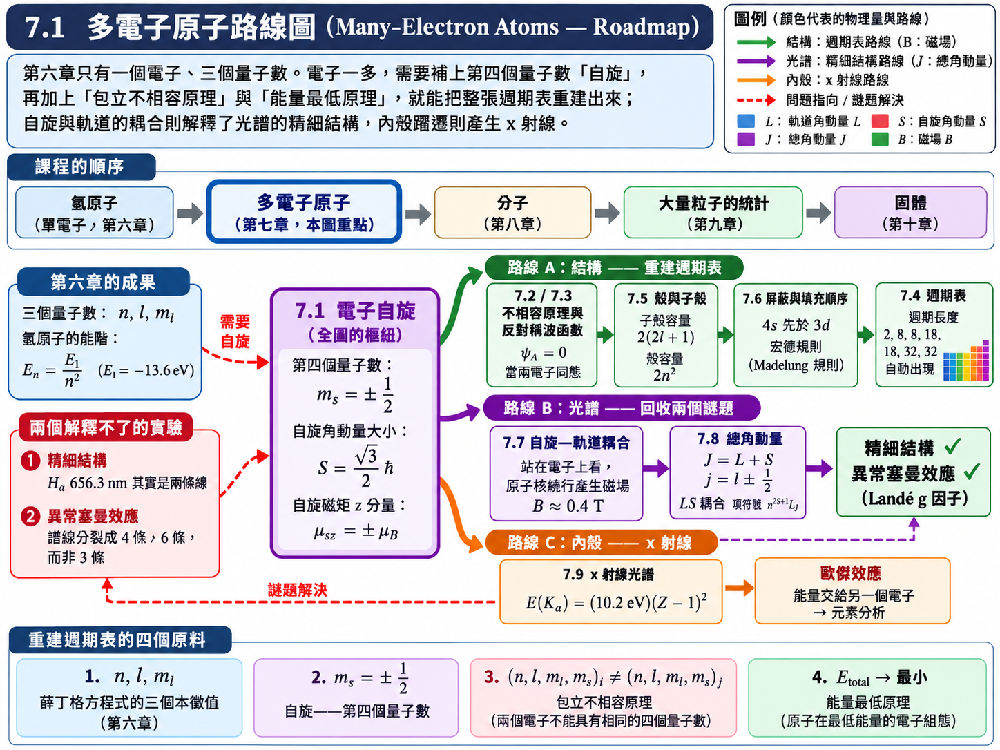
薛丁格方程式解釋不了的兩件事#
精細結構 (Fine structure)： 氫原子 \(n = 3 \to n = 2\) 的躍遷（巴耳末系的 \(\text{H}_\alpha\) 線），理論預測是一條波長 \(656.3 \ \text{nm}\) 的單一譜線。但用高解析度的光譜儀去看，它其實是兩條靠得非常近的譜線，相距約 \(0.14 \ \text{Å}\)（\(= 0.014 \ \text{nm}\)）。（課本與投影片寫作「\(0.14 \ \text{nm}\)」，單位應為 \(\text{Å}\)；\(7.7\) 節例題 7.3 會用自旋—軌道耦合把這個數字估算出來，屆時可以互相驗證。）
異常塞曼效應 (Anomalous Zeeman effect)： 由 6.10 節 的 \((6.43)\)，原子放進磁場後每條譜線應該分裂成三條等間距的譜線（正常塞曼效應）。但實驗上許多原子的譜線分裂成四條、六條甚至更多，而且間距也不是 \(eB/4\pi m\)（圖 7.1）。
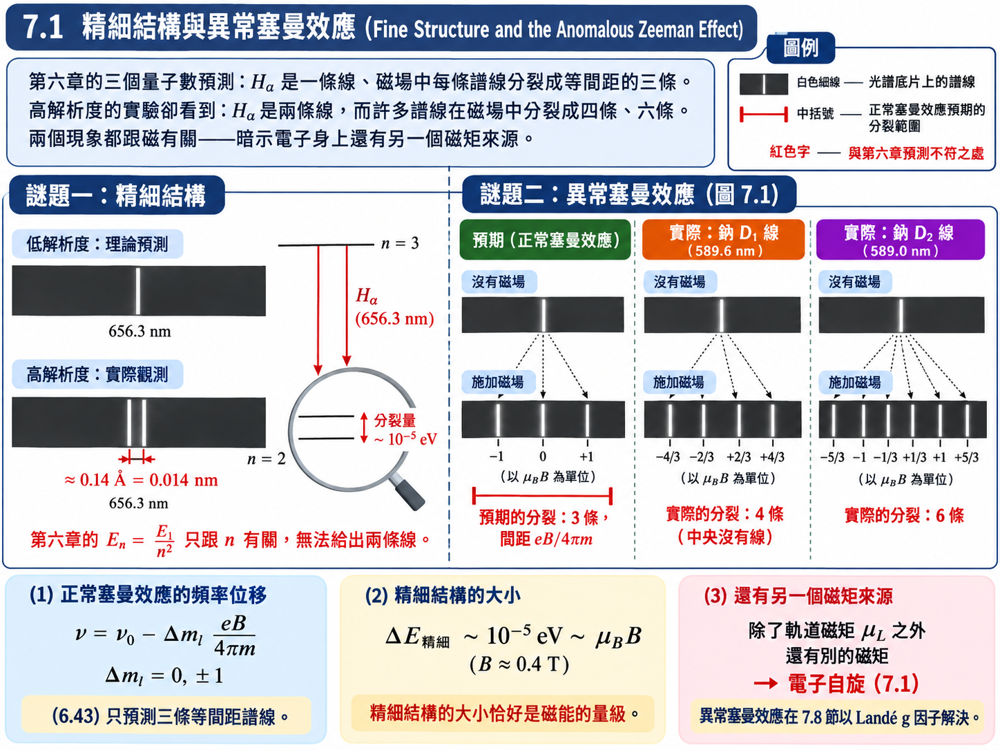
這兩個現象有一個共通點：都跟磁有關。異常塞曼效應本來就是外加磁場造成的；而精細結構的分裂量級（約 \(10^{-5} \ \text{eV}\)）恰好與 6.10 節算出的磁能 \(\mu_B B\) 在零點幾特斯拉磁場下的數量級相同。這強烈暗示：除了軌道運動產生的磁矩之外，電子身上還有另一個薛丁格方程式沒有預測到的磁矩來源。
自旋的提出#
1925 年，古德斯密特 (Goudsmit) 與烏倫貝克 (Uhlenbeck) 提出：電子本身帶有一個內稟角動量 (intrinsic angular momentum)，與它在空間中怎麼繞行無關，並把它取名為自旋 (spin)。「自旋」這個名字沿用至今，但它容易誤導——例題 7.1 會算出，若真的把電子想像成一顆自轉的小球，它的赤道速度要比光速大一萬倍以上。比較嚴謹的說法是：自旋就是電子與生俱來的角動量，不是任何古典意義下的轉動。
1928 年，狄拉克把相對論與量子力學結合，電子的波函數具有多個分量，理論自然包含自旋。對本課程而言，先把自旋視為獨立的內部自由度，引用 \(s=1/2\) 與自旋磁矩的實驗及理論結果。這不是單靠空間維度或矩陣分量的數目就能推出的結論。
假設與已知 (Assumptions & Preliminaries)#
【已知 1】 角動量量子化的通則 (General quantization rule of angular momentum)： 6.5 與 6.6 節 對軌道角動量得到「大小」與「\(z\) 投影」兩條量子化規則。這兩條規則不是軌道角動量專屬的——任何角動量（軌道、自旋、總角動量）都必須遵守同樣的形式。
\[\begin{split}\begin{gather*} \left| \vec{A} \right| &=& \sqrt{a\left( a+1 \right)}\,\hbar \\ A_z &=& m_a\hbar, \qquad m_a = -a, -a+1, \dots, a-1, a \end{gather*}\end{split}\]\(\vec{A}\) : 任一種角動量向量 (Any angular momentum vector)，\([\text{J}\cdot\text{s}]\)
\(a\) : 該角動量的量子數 (Angular-momentum quantum number)，\([\text{無單位}]\)
\(m_a\) : 該角動量在 \(z\) 軸上的投影量子數 (Projection quantum number)，\([\text{無單位}]\)
註：\(m_a\) 從 \(-a\) 走到 \(+a\)、每次差 \(1\)，故共有 \(2a+1\) 個值。\(2a+1\) 必須是正整數，所以 \(a\) 只能是整數或半整數：\(a = 0, \tfrac{1}{2}, 1, \tfrac{3}{2}, \dots\)。軌道角動量只用到整數那一半，自旋則可以取整數或半整數，電子的自旋量子數為 \(1/2\)。
【已知 2】 磁偶極在磁場中的位能 (Potential energy of a magnetic dipole)： 即 \((6.38)\)。取磁場方向為 \(z\) 軸時，只有磁矩的 \(z\) 分量有貢獻。
\[U_m = -\vec{\mu}\cdot\vec{B} = -\mu_z B\]\(U_m\) : 磁能 (Magnetic energy)，\([\text{J}]\)
\(\vec{\mu}\) : 磁偶極矩 (Magnetic dipole moment)，\([\text{J}\cdot\text{T}^{-1}]\)
\(\mu_z\) : 磁矩在磁場方向的分量 (Component along the field)，\([\text{J}\cdot\text{T}^{-1}]\)
\(B\) : 磁場大小 (Field magnitude)，\([\text{T}]\)
【已知 3】 軌道磁矩 (Orbital magnetic moment)： 即 \((6.39)\)。比值 \(e/2m\) 稱為軌道的旋磁比。
\[\vec{\mu}_L = -\left( \frac{e}{2m} \right)\vec{L}\]\(\vec{\mu}_L\) : 軌道磁矩 (Orbital magnetic moment)，\([\text{J}\cdot\text{T}^{-1}]\)
\(\vec{L}\) : 軌道角動量 (Orbital angular momentum)，\([\text{J}\cdot\text{s}]\)
【定義 1】 波耳磁子 (Bohr magneton)： 沿用 6.10 節的定義。
\[\begin{split}\begin{gather*} \mu_B &\overset{\text{def}}{=}& \frac{e\hbar}{2m} \\ &\approx& 9.274 \times 10^{-24} \ \text{J}\cdot\text{T}^{-1} \\ &\approx& 5.788 \times 10^{-5} \ \text{eV}\cdot\text{T}^{-1} \end{gather*}\end{split}\]【假設 1】 銀原子的角動量只來自最外層的一個電子 (Only the valence electron of silver contributes)： 銀 (\(Z = 47\)) 有 \(46\) 個電子填滿了內部的殼層與子殼層，填滿的殼層總角動量為零（\(7.5\) 節會說明）；剩下的一個電子在 \(5s\) 態，\(l = 0\)。因此銀原子的軌道角動量為零。
\[l_{\text{Ag}} = 0 \quad \Longrightarrow \quad m_l = 0 \ \text{（只有一個值）}\]【假設 2】 自旋的旋磁比是軌道的兩倍 (Gyromagnetic ratio of spin)： 自旋磁矩與自旋角動量的比值，是 \((6.39)\) 軌道情形的兩倍。這個「兩倍」無法從任何古典模型得到，它是狄拉克理論的結果，並經實驗證實（精確值 \(g_s = 2.0023\)，與 \(2\) 的微小差額來自量子電動力學修正）。方向與角動量相反，因為電子帶負電。
\[\vec{\mu}_s = -g_s\left( \frac{e}{2m} \right)\vec{S}, \qquad g_s \approx 2\]\(\vec{\mu}_s\) : 自旋磁矩 (Spin magnetic moment)，\([\text{J}\cdot\text{T}^{-1}]\)
\(\vec{S}\) : 自旋角動量 (Spin angular momentum)，\([\text{J}\cdot\text{s}]\)
\(g_s\) : 電子自旋 \(g\) 因子 (Electron spin g-factor)，\([\text{無單位}]\)
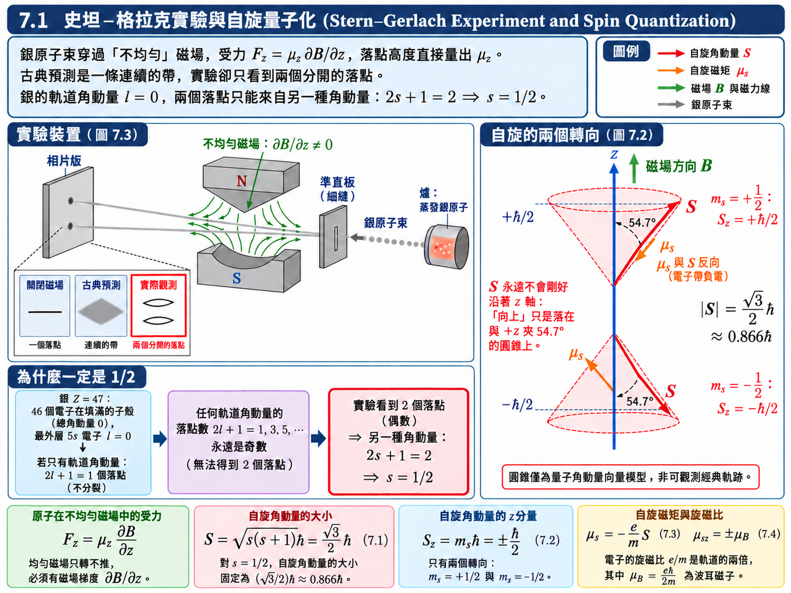
推導：史坦—格拉克實驗與 \(s = 1/2\)#
1921–1922 年的史坦—格拉克實驗 (Stern–Gerlach experiment)（圖 7.3）是自旋最直接的證據。銀原子從爐子蒸發出來，排成一道原子束，穿過一對形狀特殊的磁極之間，最後打在相片板上。磁極一尖一凹，刻意做出不均勻的磁場。
為什麼一定要不均勻？由【已知 2】，磁偶極在磁場中感受到的力是位能的負梯度：
\(F_z\) : 原子在 \(z\) 方向受的力 (Force along \(z\))，\([\text{N}]\)
\(\partial B/\partial z\) : 磁場梯度 (Field gradient)，\([\text{T}\cdot\text{m}^{-1}]\)
均勻磁場的 \(\partial B/\partial z = 0\)，磁偶極只會被轉動、不會被推開；必須有梯度，原子才會依照自己的 \(\mu_z\) 被推往不同的高度。換言之，相片板上的落點高度直接量出了 \(\mu_z\)。
古典預測： 原子的磁矩方向是隨機的，\(\mu_z = \mu\cos\theta\) 可以取 \(-\mu\) 到 \(+\mu\) 之間的任何值，相片板上應該出現一條連續的垂直帶狀痕跡（圖 7.3 的「古典圖形」）。
量子預測： 由【已知 1】，\(\mu_z\) 正比於投影量子數，只能取 \(2a+1\) 個離散值，相片板上應該出現 \(2a+1\) 個分開的落點。
實驗結果： 相片板上只出現兩個分開的落點（圖 7.3 的「真實圖形」）。
這個結果有兩層意義。第一，它證實了空間量子化。第二，落點數是偶數——而由【假設 1】，銀原子的軌道角動量 \(l = 0\)，若只有軌道角動量，相片板上應該只有 \(2l + 1 = 1\) 個落點、根本不會分裂；何況任何軌道角動量給出的 \(2l+1\) 永遠是奇數。因此這兩個落點必定來自另一種角動量，其量子數 \(s\) 滿足
這正是【已知 1】註解中預留的「半整數」那一半。
推導：自旋角動量與自旋磁矩#
把 \(s = \tfrac{1}{2}\) 代入【已知 1】，自旋角動量的大小為
\(S\) : 自旋角動量的大小 (Magnitude of the spin angular momentum)，\([\text{J}\cdot\text{s}]\)
\(s\) : 自旋量子數 (Spin quantum number)，對電子恆為 \(\tfrac{1}{2}\)，\([\text{無單位}]\)
其 \(z\) 分量由【已知 1】，\(m_s\) 從 \(-\tfrac{1}{2}\) 到 \(+\tfrac{1}{2}\)、每次差 \(1\)，只有兩個值：
\(S_z\) : 自旋角動量的 \(z\) 分量 (z-component of the spin)，\([\text{J}\cdot\text{s}]\)
\(m_s\) : 自旋磁量子數 (Spin magnetic quantum number)，\(m_s = \pm\tfrac{1}{2}\)，\([\text{無單位}]\)
習慣上把 \(m_s = +\tfrac{1}{2}\) 叫做「自旋向上」、\(m_s = -\tfrac{1}{2}\) 叫做「自旋向下」。但與 6.6 節的 \(\vec{L}\) 一樣，\(\vec{S}\) 從來不會真的沿著 \(z\) 軸：
此處的 \(54.7^\circ\) 是向量模型中以 \(S_z/\sqrt{s(s+1)\hbar^2}\) 定義的示意角。「自旋向上」嚴格指 \(S_z\) 的本徵值為 \(+\hbar/2\)，不是電子有一支方向完全確定、沿圓錐運動的古典箭頭。
自旋磁矩由【假設 2】取 \(g_s = 2\)：
\(\vec{\mu}_s\) : 自旋磁矩 (Spin magnetic moment)，\([\text{J}\cdot\text{T}^{-1}]\)
與 \((6.39)\) 比較：比例常數是 \(e/m\) 而不是 \(e/2m\)。
取 \(z\) 分量並代入 \((7.2)\)：
\(\mu_{sz}\) : 自旋磁矩的 \(z\) 分量 (z-component of the spin magnetic moment)，\([\text{J}\cdot\text{T}^{-1}]\)
自旋磁矩在任何方向上的投影，大小恰好就是一個波耳磁子。
表 7.1 一個原子電子的量子數#
加上自旋之後，描述原子中一個電子的狀態需要四個量子數：
名稱 |
符號 |
可能數值 |
可被決定的量 |
|---|---|---|---|
主量子數 |
\(n\) |
\(1, 2, 3, \dots\) |
電子能量 |
軌道量子數 |
\(l\) |
\(0, 1, 2, \dots, n-1\) |
軌道角動量大小 |
磁量子數 |
\(m_l\) |
\(-l, \dots, 0, \dots, +l\) |
軌道角動量方向 |
自旋磁量子數 |
\(m_s\) |
\(-\tfrac{1}{2}, +\tfrac{1}{2}\) |
電子自旋方向 |
注意表中列的是 \(m_s\) 而不是 \(s\)：\(s\) 對所有電子都固定是 \(\tfrac{1}{2}\)，不會變動，真正能區分不同電子狀態的是自旋的方向 \(m_s\)。
例題 7.1：把電子當成自轉小球的赤道速度#
題目： 假設電子是一顆半徑 \(r = 5.00 \times 10^{-17} \ \text{m}\)、繞著中心軸自轉的均勻球體，求其赤道速度 \(v\)。
解答：
均勻球體的轉動慣量 (moment of inertia) 為 \(I = \tfrac{2}{5}mr^2\)，角速度為 \(\omega = v/r\)。令這顆球的角動量 \(I\omega\) 等於 \((7.1)\) 的自旋角動量：
代入數值：
【物理知識回顧】 赤道速度是光速的一萬六千多倍，這在相對論下是不可能的，而且沒有任何電子的古典模型能克服這個困難。所以自旋不能理解成一顆小球在自轉；它是電子的內稟性質，就像電荷與質量一樣，是電子「生下來就帶著」的。這也是為什麼較嚴謹的說法是內稟角動量，「自旋」只是歷史留下來的名字。
順帶一提，自旋在電機領域並不遙遠。由 \((7.4)\)，電子放進磁場 \(B\) 中，自旋「向上」與「向下」的磁能相差 \(2\mu_B B\)；在 \(1 \ \text{T}\) 的磁場下這個能量差約 \(1.16 \times 10^{-4} \ \text{eV}\)，對應約 \(28 \ \text{GHz}\) 的微波。用微波把電子自旋翻過來，就是電子自旋共振 (electron spin resonance, ESR)；把同樣的概念用在原子核的自旋上，就是醫院裡的核磁共振造影 (MRI)。
7.2 不相容原理 (Exclusion Principle)#
氫原子在基態時，唯一的電子待在能量最低的 \(1s\) 態。那麼多電子原子呢？最天真的猜法是：所有電子都擠進能量最低的 \(1s\) 態。
如果真是這樣，原子的性質應該會隨著電子數平滑地變化——多一個電子，只是 \(1s\) 態裡多擠一個而已。但實驗事實完全不是如此：氟 (\(Z = 9\)) 是活性最強的非金屬，氖 (\(Z = 10\)) 是幾乎不跟任何東西反應的惰性氣體，鈉 (\(Z = 11\)) 又是活性極強的金屬。電子數只差一個，化學性質卻天差地遠。這說明電子絕不是全部擠在同一個態，而是依照某種規則一層一層地往上放。
1925 年，包立 (Wolfgang Pauli) 在分析原子光譜時歸納出這條規則：
不相容原理 (Exclusion principle)：一個原子中，不能有兩個電子處於同一個量子態。每個電子都必須擁有一組不同的量子數 \(n, l, m_l, m_s\)。
假設與已知 (Assumptions & Preliminaries)#
【已知 1】 表 7.1： 一個原子電子的狀態由四個量子數 \(\left( n, l, m_l, m_s \right)\) 完全標定，其中 \(m_s\) 只有 \(\pm\tfrac{1}{2}\) 兩個值（由史坦—格拉克實驗與 \((7.2)\) 得知）。
【假設 1】 包立不相容原理 (Pauli exclusion principle)： 對同一個原子中任意兩個不同的電子 \(i \ne j\)，
\[\left( n, l, m_l, m_s \right)_i \ne \left( n, l, m_l, m_s \right)_j\]\(i, j\) : 電子的編號 (Electron labels)
推導：每個軌域最多兩個電子#
固定前三個量子數 \(\left( n, l, m_l \right)\)——也就是固定了第六章解出的空間波函數 \(\psi_{nlm_l}\)（化學上稱為一個「軌域」）——剩下能區分電子的只有 \(m_s\)：
每個空間軌域最多只能放兩個電子，而且兩者的自旋必須相反。這個「兩」不是來自薛丁格方程式，而是來自史坦—格拉克實驗看到的那兩個落點。
【物理知識回顧】 不相容原理加上第六章的三個量子數，就是本章後半「重建週期表」的全部原料。課程中反覆強調的組合是：薛丁格方程式解出的量子數 + 自旋 + 包立不相容原理 + 能量最低原理 \(\Longrightarrow\) 週期表（\(7.5\)、\(7.6\) 節）。
注意不相容原理在這裡是以「原理」的身分提出的，它並不是薛丁格方程式的推論。下一節會看到，它其實是一個更深層的對稱性要求——全同粒子的波函數必須是反對稱的——的直接後果。
7.3 對稱及反對稱波函數 (Symmetric and Antisymmetric Wave Functions)#
古典物理中，兩顆完全相同的撞球仍然可以被分辨：只要一路盯著它們的軌跡，就知道哪一顆是一號、哪一顆是二號。量子力學裡做不到這件事。兩個電子的波函數會在空間中重疊，它們沒有確定的軌跡，一旦靠近之後再分開，原則上就無法分辨哪一個是原本的一號。這種粒子稱為全同粒子 (identical particles)。
「無法分辨」不只是一句哲學上的話，它對波函數加上了一個非常強的數學限制。本節要證明：這個限制只允許兩種波函數——對稱的與反對稱的——而電子屬於後者，包立不相容原理就是它的直接後果。
假設與已知 (Assumptions & Preliminaries)#
【已知 1】 機率密度 (Probability density)： 波函數本身不可觀測，可觀測的是 \(|\psi|^2\)，它代表在某組座標找到粒子的機率密度。
【假設 1】 粒子之間沒有交互作用 (Non-interacting particles)： 每個粒子各自待在自己的單粒子態，系統的波函數就是各個單粒子波函數的乘積（類比於 6.2 節「互相獨立的變數可以拆成乘積」）。
\[\psi\left( 1, 2, 3, \dots, n \right) = \psi\left( 1 \right)\psi\left( 2 \right)\psi\left( 3 \right)\cdots\psi\left( n \right) \tag{7.5}\]\(1, 2, \dots, n\) : 第 \(1\) 到第 \(n\) 個粒子的全部座標（空間位置與自旋）的簡寫 (Shorthand for all coordinates of each particle)
\(\psi\left( 1, 2, \dots, n \right)\) : \(n\) 粒子系統的波函數 (System wave function)
【假設 2】 全同粒子不可分辨 (Indistinguishability)： 把兩個粒子的標籤互換，任何可觀測的結果都不能改變。由【已知 1】，可觀測的是機率密度，故
\[\left| \psi \right|^2\left( 1, 2 \right) = \left| \psi \right|^2\left( 2, 1 \right) \tag{7.6}\]\(\psi\left( 2, 1 \right)\) : 把粒子 \(1\) 與粒子 \(2\) 的座標互換後的波函數 (Wave function with the two labels exchanged)
【已知 2】 單粒子態的正交歸一性 (Orthonormality of single-particle states)： 薛丁格方程式屬於 Sturm–Liouville 型的本徵方程式，不同本徵值的本徵函數彼此正交（6.9 節已用過這個性質）；再加上歸一化，得到
\[\begin{split}\begin{gather*} \int \left| \psi_a \right|^2 dV &=& 1 \\ \int \psi_a^{*}\psi_b \, dV &=& 0 \qquad \left( a \ne b \right) \end{gather*}\end{split}\]\(\psi_a, \psi_b\) : 兩個不同量子態 \(a\)、\(b\) 的單粒子波函數 (Single-particle wave functions of states \(a\) and \(b\))
\(a, b\) : 一組完整的量子數的簡寫，例如 \(\left( n, l, m_l, m_s \right)\) (Shorthand for a full set of quantum numbers)
【已知 3】 自旋與統計的關聯 (Spin–statistics connection)： 實驗事實（後來由包立在相對論量子場論中證明）：自旋為半整數的粒子，波函數對交換是反對稱的；自旋為整數的粒子，波函數對交換是對稱的。本課程直接引用，不證明。
【補充假設】 以下限制在通常三維空間的玻色／費米統計，選取交換算符 \(P_{12}\) 的本徵態，且 \(P_{12}^2=1\)。交換本徵值是與座標無關的相位；這個條件不能只由某一位置的機率密度相等推出。
推導：只有對稱與反對稱兩種可能#
由上述交換本徵態的假設，寫成 \(\psi(2,1)=e^{i\alpha}\psi(1,2)\)，其中 \(\alpha\) 是常數。\((7.6)\) 保證這與交換前後的機率密度相等相容；再交換一次，才得到相位的限制：
\(\alpha\) : 交換所產生的相位 (Exchange phase)，\([\text{rad}]\)
這個相位不能任意取。把標籤再交換一次，系統就回到原來的樣子：
因此全同粒子的波函數只有兩種：
對稱 (Symmetric)： 交換兩粒子，波函數不變。
反對稱 (Antisymmetric)： 交換兩粒子，波函數變號。
推導：兩粒子系統的對稱與反對稱波函數#
考慮兩個粒子，一個在態 \(a\)、一個在態 \(b\)。由【假設 1】，最直接的寫法是「粒子 \(1\) 在 \(a\)、粒子 \(2\) 在 \(b\)」：
但粒子不可分辨，「粒子 \(2\) 在 \(a\)、粒子 \(1\) 在 \(b\)」同樣是一個合理的描述：
\(\psi_{\text{I}}, \psi_{\text{II}}\) : 兩種標籤指派方式下的乘積波函數 (Product wave functions for the two label assignments)
問題在於 \(\psi_{\text{I}}\) 自己既不對稱、也不反對稱。把它的兩個標籤互換：
除非 \(a = b\)，\(\psi_{\text{II}}\) 是一個完全不同的函數，既不等於 \(+\psi_{\text{I}}\) 也不等於 \(-\psi_{\text{I}}\)，違反了上一小節的結論。直覺上，\(\psi_{\text{I}}\) 等於在宣告「一號就是在 \(a\) 的那一個」——它偷偷替粒子貼了標籤。
解法是把兩者線性組合，讓兩種標籤指派以同樣的權重出現：
\(\psi_S\) : 對稱波函數 (Symmetric wave function)
\(\psi_A\) : 反對稱波函數 (Antisymmetric wave function)
驗證 \(\psi_A\) 確實滿足 \((7.8)\)：
同理 \(\psi_S\left( 2,1 \right) = +\psi_S\left( 1,2 \right)\)。
在 \(a\ne b\) 且兩個單粒子態正交歸一時，前面的 \(1/\sqrt{2}\) 是歸一化常數。把 \(\left| \psi_{\text{I}} \pm \psi_{\text{II}} \right|^2\) 對兩個粒子的座標積分，交叉項因【已知 2】的正交性而消失：
故要乘上 \(1/\sqrt{2}\)，總機率才會是 \(1\)。
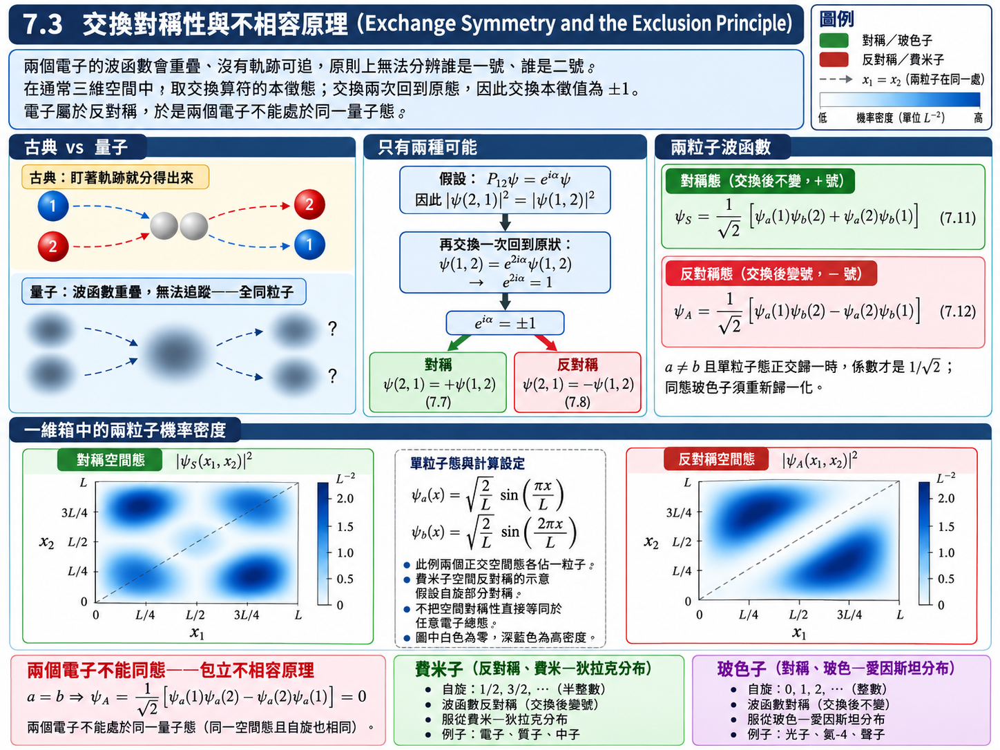
推導：反對稱 \(\Longrightarrow\) 不相容原理#
現在讓兩個粒子處於同一個量子態，即 \(a = b\)：
反對稱波函數在兩粒子同態時恆等於零——這樣的狀態根本不存在。由【已知 3】，電子的自旋為 \(\tfrac{1}{2}\)，其波函數必須反對稱，於是兩個電子不能佔據同一個量子態。這正是 \(7.2\) 節的包立不相容原理：它不是額外塞進去的規則，而是「全同 + 反對稱」的數學後果。
同樣的論證可以推廣到任意多個電子：只要兩個電子的量子數完全相同，把它們交換後波函數必須同時「不變」（因為兩者一模一樣）又「變號」（因為反對稱），唯一的可能就是波函數為零。
推導：反對稱的粒子彼此迴避，對稱的粒子彼此靠攏#
再看一個更細緻的後果。讓兩個粒子位在同一組座標上（同一位置、同一自旋方向），也就是把 \((7.11)\)、\((7.12)\) 中的座標 \(2\) 換成座標 \(1\)：
作為比較，若兩粒子是可分辨的（直接用 \(\psi_{\text{I}}\)），同一組座標的機率密度是 \(\left| \psi_a\left( 1 \right)\psi_b\left( 1 \right) \right|^2\)。因此：
反對稱： 上述同一完整座標的聯合機率密度為零——它們傾向互相迴避。
對稱： 上述同一完整座標的聯合機率密度是指定乘積態的兩倍——它們傾向擠在一起。
這個結論在 \(7.6\) 節解釋宏德規則時會再用到：自旋平行的兩個電子，空間上會被迫彼此遠離。
費米子與玻色子#
依照【已知 3】，所有粒子分成兩大類：
費米子 (Fermion) |
玻色子 (Boson) |
|
|---|---|---|
自旋 |
半整數：\(\tfrac{1}{2}, \tfrac{3}{2}, \dots\) |
\(0\) 或整數：\(0, 1, 2, \dots\) |
交換對稱性 |
反對稱 \((7.8)\) |
對稱 \((7.7)\) |
不相容原理 |
遵守 |
不遵守，可任意多個擠在同一態 |
統計分布 |
費米—狄拉克分布 (Fermi–Dirac distribution) |
玻色—愛因斯坦分布 (Bose–Einstein distribution) |
例子 |
電子、質子、中子 |
光子、氦-4 原子、聲子 |
【物理知識回顧】 本節使用全同粒子的交換對稱性、通常三維空間的玻色／費米分類，以及電子為費米子的自旋—統計關係。在這些前提下，反對稱性推出包立不相容原理。同自旋電子的空間機率關聯也受交換效應影響；這不是額外的古典排斥力。
這兩種對稱性在後面的章節還會反覆出現：第八章討論分子鍵結時，兩個原子軌域的對稱與反對稱組合會分裂成能量不同的鍵結與反鍵結態；第九章的統計物理則會看到，玻色子、古典粒子、費米子三者擠在同一能態的傾向依序遞減，分別對應玻色—愛因斯坦、馬克士威—波茲曼、費米—狄拉克三種分布。
7.4 週期表 (Periodic Table)#
週期表比薛丁格方程式與量子力學早了半個多世紀。它完全是從化學出發的分類學：從十九世紀初開始，化學家把當時已知的元素依照化學性質不斷分類、重排；元素愈發現愈多，表格也愈來愈完整。1869 年門得列夫 (Dmitri Mendeleev) 把元素依原子量排列，發現化學性質會週期性地重複出現，並大膽地在表中留下空格，預言了當時尚未發現的鎵、鈧、鍺——後來一一被找到。
這是一份純粹由實驗歸納出來的表。它非常成功，但在量子力學出現之前，沒有人能說清楚它為什麼長這個樣子。
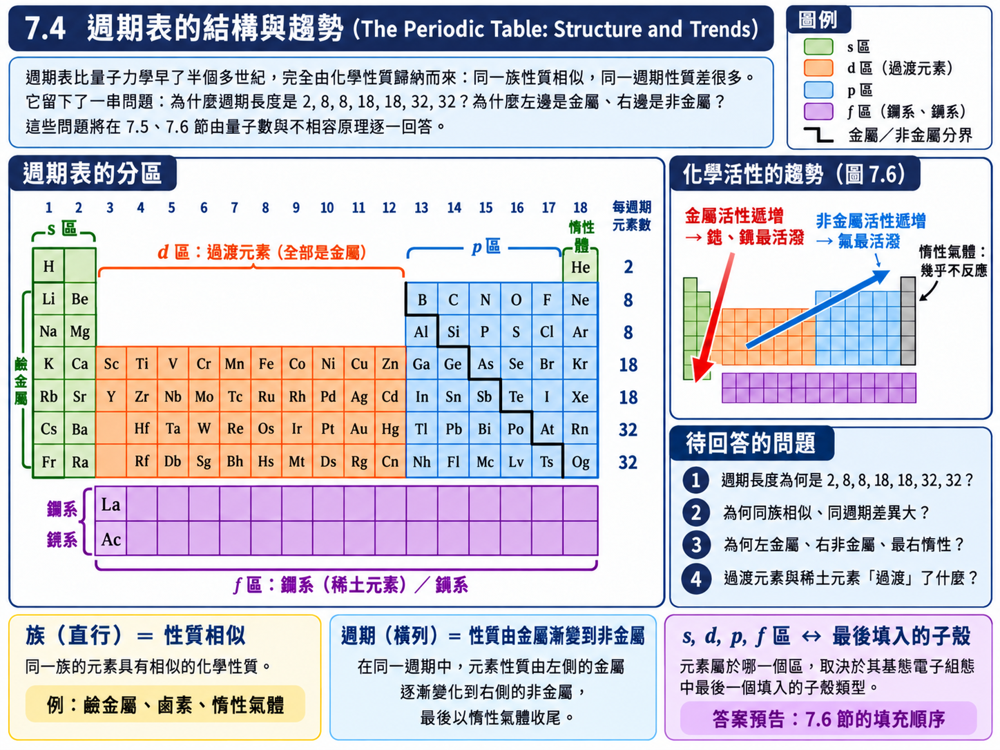
週期表的結構（圖 7.4 – 圖 7.7）#
族 (Group)： 同一直行的元素具有相似的化學與物理性質。
第 1 族——鹼金屬 (alkali metals)： 鋰、鈉、鉀、銣、銫、鍅。質地柔軟、活性極強。（氫雖然排在第 1 族上方，但不算鹼金屬。）
第 2 族——鹼土金屬 (alkaline earth metals)： 鈹、鎂、鈣、鍶、鋇、鐳。
第 7 族——鹵素 (halogens)： 氟、氯、溴、碘、砈。活性很強的非金屬。
第 8 族（或稱 0 族）——惰性氣體 (inert gases / noble gases)： 氦、氖、氬、氪、氙、氡。幾乎不參與任何化學反應。
（以上沿用課本「主族 1–8」的舊式編號；現行 IUPAC 編號中，鹵素為第 17 族、惰性氣體為第 18 族。）
週期 (Period)： 同一橫列的元素，從左到右性質差異很大——從活潑的金屬一路變到非金屬，最後以惰性氣體收尾。各週期的元素數目依序為
過渡元素 (Transition elements)： 早期的週期表從第 2 族直接跳到第 3 族，後來發現有一大群元素性質介於兩者之間，便把它們插在中間，稱為「過渡」元素（圖 7.7），它們全部都是金屬。第六、七週期還各有一串性質極為相近的元素被拉到表的下方另外排列：鑭系元素 (lanthanides，又稱稀土元素 rare earths) 與錒系元素 (actinides)。
金屬與非金屬（圖 7.5）： 絕大多數元素是金屬，集中在表的左方與中間；非金屬集中在右上角；兩者之間沿著一條階梯狀的分界線排列著性質介於其間的類金屬。
化學活性的趨勢（圖 7.6）： 金屬活性往左下遞增（銫、鍅最活潑）；非金屬活性往右上遞增（氟最活潑）；最右一行的惰性氣體則幾乎沒有活性。
【物理知識回顧】 這張表丟給我們一連串的問題：
為什麼週期的長度是 \(2, 8, 8, 18, 18, 32, 32\) 這串奇怪的數字？
為什麼同一族的元素性質相似、同一週期的卻差很多？
為什麼左邊是金屬、右邊是非金屬，最右邊又突然變得完全不活潑？
過渡元素與稀土元素到底「過渡」了什麼？
接下來以量子數、自旋與包立不相容原理計算殼層容量，再加入屏蔽、軌域能量順序與能量最低原理，解釋這些週期性。容量計數可直接推導；實際填充順序與組態能量則需近似模型或實驗資料。
7.5 原子結構 (Atomic Structures)#
多電子原子的結構，由兩條基本原理決定：
能量最低原理： 一個粒子系統在總能量最小時才是穩定狀態。這其實就是熱力學的要求——系統會自然地往能量最低的狀態走。
不相容原理： 原子中任一特定的量子態，最多只能有一個電子。
前者說「電子想往低處擠」，後者說「每個位置只能坐一個人」。兩者一拉一推，電子就只好由低到高、一格一格地往上填。本節先算出每一層「有幾格」，下一節再討論「填的順序」。
假設與已知 (Assumptions & Preliminaries)#
【已知 1】 表 7.1 的量子數範圍： 主量子數為 \(n\) 時，
\[\begin{split}\begin{gather*} l &\in& \left\{ 0, 1, 2, \dots, n-1 \right\} \\ m_l &\in& \left\{ -l, -l+1, \dots, l-1, l \right\} \\ m_s &\in& \left\{ -\tfrac{1}{2}, +\tfrac{1}{2} \right\} \end{gather*}\end{split}\]註：\(m_l\) 共有 \(2l+1\) 個值，\(l\) 共有 \(n\) 個值。
【假設 1】 能量最低原理 (Minimum-energy principle)： 基態原子中，電子依能量由低到高依序填入可用的量子態。
【假設 2】 包立不相容原理： \(7.2\) 節的結果，每一組 \(\left( n, l, m_l, m_s \right)\) 最多一個電子。
【定義 1】 殼與子殼 (Shells and subshells)： 主量子數 \(n\) 相同的電子屬於同一個殼 (shell)；\(n\) 與 \(l\) 都相同的電子屬於同一個子殼 (subshell)。殼沿用 x 射線光譜學的歷史代號（\(7.9\) 節會看到它的來源）：
\[\begin{split}\begin{matrix} n = & 1 & 2 & 3 & 4 & 5 & \dots \\ & K & L & M & N & O & \dots \end{matrix} \tag{7.13}\end{split}\]子殼則用 6.5 節的字母標記 \(l\)：\(s, p, d, f, g, \dots\)，例如 \(3d\) 代表 \(n = 3\)、\(l = 2\) 的子殼。
【已知 2】 等差級數和 (Sum of an arithmetic series)： 共 \(N\) 項的等差數列，總和等於項數的一半乘上首項與末項之和。
\[\sum_{k=0}^{N-1}\left( a_0 + kd \right) = \frac{N}{2}\left[ a_0 + a_{N-1} \right]\]\(a_0\) : 首項 (First term)
\(a_{N-1}\) : 末項 (Last term)
\(d\) : 公差 (Common difference)
推導：子殼的容量#
固定 \(n\) 與 \(l\)，可以變動的是 \(m_l\)（\(2l+1\) 種）與 \(m_s\)（\(2\) 種）。由【假設 2】，每一種組合最多放一個電子：
子殼 |
\(s\) |
\(p\) |
\(d\) |
\(f\) |
\(g\) |
|---|---|---|---|---|---|
\(l\) |
\(0\) |
\(1\) |
\(2\) |
\(3\) |
\(4\) |
軌域數 \(2l+1\) |
\(1\) |
\(3\) |
\(5\) |
\(7\) |
\(9\) |
最多電子數 \(2(2l+1)\) |
\(2\) |
\(6\) |
\(10\) |
\(14\) |
\(18\) |
以 \(M\) 殼（\(n = 3\)）為例，把每個 \(\left( l, m_l \right)\) 都畫成一個格子，每格最多一對自旋相反的電子（\(\uparrow\) 代表 \(m_s = +\tfrac{1}{2}\)，\(\downarrow\) 代表 \(m_s = -\tfrac{1}{2}\)）：
表 7.3 原子 \(M\) (\(n = 3\)) 殼的子殼容量
\(m_l = 0\) |
\(m_l = -1\) |
\(m_l = +1\) |
\(m_l = -2\) |
\(m_l = +2\) |
小計 |
|
|---|---|---|---|---|---|---|
\(l = 0\) |
\(\downarrow\uparrow\) |
\(2\) |
||||
\(l = 1\) |
\(\downarrow\uparrow\) |
\(\downarrow\uparrow\) |
\(\downarrow\uparrow\) |
\(6\) |
||
\(l = 2\) |
\(\downarrow\uparrow\) |
\(\downarrow\uparrow\) |
\(\downarrow\uparrow\) |
\(\downarrow\uparrow\) |
\(\downarrow\uparrow\) |
\(10\) |
\(M\) 殼總共可以容納 \(2 + 6 + 10 = 18\) 個電子。
推導：殼的容量 \(2n^2\)#
一個殼包含 \(l = 0, 1, \dots, n-1\) 共 \(n\) 個子殼，把各子殼的容量加起來。這是一個首項 \(2\left( 2\cdot 0+1 \right) = 2\)、末項 \(2\left[ 2\left( n-1 \right)+1 \right]\)、公差 \(4\) 的等差級數：
\(N_{\max}\) : 第 \(n\) 殼最多可容納的電子數 (Capacity of the \(n\)-th shell)，\([\text{無單位}]\)
殼 |
\(K\) |
\(L\) |
\(M\) |
\(N\) |
|---|---|---|---|---|
\(n\) |
\(1\) |
\(2\) |
\(3\) |
\(4\) |
容量 \(2n^2\) |
\(2\) |
\(8\) |
\(18\) |
\(32\) |
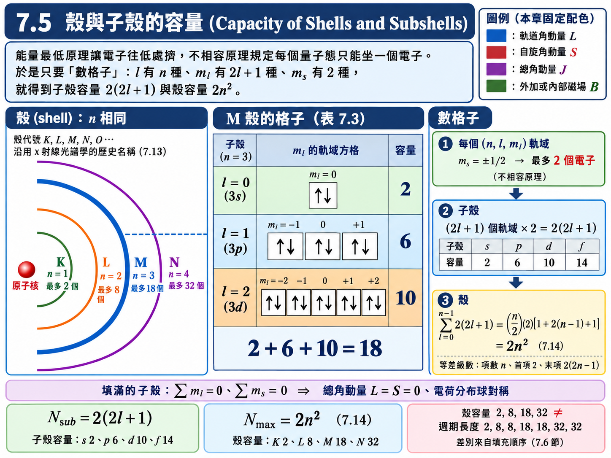
推導：填滿的殼與子殼總角動量為零#
一個填滿的子殼，每一個 \(m_l\) 都有一個對應的 \(-m_l\)，每一個 \(m_s = +\tfrac{1}{2}\) 都有一個 \(m_s = -\tfrac{1}{2}\) 與它配對。因此整個子殼角動量的 \(z\) 分量總和為
\(z\) 軸的選擇是任意的，對任何方向的投影都是零，代表填滿子殼的總軌道角動量與總自旋角動量都等於零；可以進一步證明它的電荷分布是球對稱的。這個結論有兩個重要的用途：
\(7.1\) 節的銀原子只剩最外層一個 \(5s\) 電子貢獻角動量，正是因為其餘 \(46\) 個電子全部在填滿的子殼裡。
討論原子的化學性質、光譜或總角動量時，只需要看最外層沒填滿的那幾個電子；內部填滿的殼就像一顆球對稱、不活潑的「核心 (core)」。
電子組態與束縛能（圖 7.8）#
原子中各子殼的電子數，用電子組態 (electron configuration) 表示：子殼代號右上角標該子殼的電子數。例如鈉 (\(Z = 11\))：
\(K\) 殼 \(2\) 個、\(L\) 殼 \(8\) 個都填滿，剩下的一個電子進入 \(M\) 殼的 \(3s\)。
圖 7.8 畫出各子殼電子的束縛能 (binding energy) 隨原子序的變化，單位是雷德堡 (\(1 \ \text{Ry} = 13.6 \ \text{eV}\)，即氫原子的基態束縛能)。從圖中可以讀出兩件事：
內層電子的束縛能隨 \(Z\) 急遽增加。 到了 \(Z \approx 30\)，\(1s\) 電子的束縛能已達數百 Ry，也就是數千 eV——這是 \(7.9\) 節 x 射線的能量來源。
同一個殼裡，\(s\) 比 \(p\) 束縛得緊，\(p\) 又比 \(d\) 束縛得緊。 這與氫原子截然不同：由 \((6.16)\)，氫原子的能量只跟 \(n\) 有關，同一個 \(n\) 的不同 \(l\) 完全簡併。多電子原子中這個簡併被打破了，原因是其他電子的屏蔽——下一節的主題。
【物理知識回顧】 \(2n^2\) 這個數字完全是「數格子」數出來的：\(l\) 有 \(n\) 種、\(m_l\) 有 \(2l+1\) 種、\(m_s\) 有 \(2\) 種，再加上「每格只能坐一個」。前三者來自薛丁格方程式的本徵值、最後一個來自自旋，而「每格只能坐一個」來自包立。
不過要注意，殼的容量 \(2, 8, 18, 32\) 並不等於週期的長度 \(2, 8, 8, 18, 18, 32, 32\)。例如 \(M\) 殼可以裝 \(18\) 個電子，第三週期卻只有 \(8\) 個元素。兩者之間的落差，來自於「填的順序」並不是單純照著 \(n\) 走——這正是下一節要解決的問題。
7.6 解釋週期表 (Explaining the Periodic Table)#
原子的化學行為，取決於它最外層的電子。內部填滿的殼由上一節知道是球對稱、總角動量為零、束縛得又很緊的「核心」，幾乎不參與化學反應。一個原子容不容易丟掉電子、容不容易搶別人的電子，全看最外層那幾個電子在 \(s\)、\(p\)、\(d\)、\(f\) 哪一種子殼、填了幾個、離原子核多遠。
本節要用的關鍵概念是屏蔽 (shielding)：外層電子看到的原子核電荷，被內層電子的負電荷部分抵消掉了。
假設與已知 (Assumptions & Preliminaries)#
【已知 1】 類氫原子的能階 (Energy levels of a hydrogen-like atom)： 第四章波耳模型的能階正比於 \(\left( \text{核電荷} \times \text{電子電荷} \right)^2\)。若原子核帶電 \(Ze\) 而非 \(e\)，只要把 \(e^2\) 換成 \(Ze^2\)：
\[\begin{split}\begin{gather*} E_n &=& -\frac{m\left( Ze \cdot e \right)^2}{8\varepsilon_0^2h^2}\left( \frac{1}{n^2} \right) \\ &=& Z^2\left[ -\frac{me^4}{8\varepsilon_0^2h^2} \right]\frac{1}{n^2} \\ &=& \frac{Z^2E_1}{n^2} \end{gather*}\end{split}\]\(E_n\) : 第 \(n\) 能階能量 (Energy of level \(n\))，\([\text{eV}]\)
\(Z\) : 核電荷數 (Nuclear charge number)，\([\text{無單位}]\)
\(E_1\) : 氫原子基態能量 (Hydrogen ground-state energy)，\(E_1 = -13.6 \ \text{eV}\)
【已知 2】 徑向機率密度與節點 (Radial probability density and nodes)： 由 \((6.25)\)，在 \(r\) 到 \(r+dr\) 球殼中找到電子的機率為 \(P\left( r \right)dr = r^2\left| R \right|^2 dr\)。\(R_{nl}\) 有 \(n - l - 1\) 個徑向節點，因此 \(l\) 愈小，\(P\left( r \right)\) 在原子核附近的「內側小峰」愈多（圖 6.11）。
【已知 3】 離心項 (Centrifugal term)： 由 \((6.14)\) 與 \((6.20)\)，徑向方程式中多了一項只跟 \(l\) 有關的正值能量，它像一道排斥牆，把 \(l\) 大的電子從原子核附近推開。
\[\frac{l\left( l+1 \right)\hbar^2}{2mr^2}\]【定義 1】 有效核電荷 (Effective nuclear charge)： 把外層電子感受到的「原子核電荷 + 內層電子的屏蔽」合起來，等效成一個點電荷 \(Z_{\text{eff}}\,e\)。
\[Z_{\text{eff}} \overset{\text{def}}{=} Z - \sigma\]\(Z_{\text{eff}}\) : 有效核電荷數 (Effective nuclear charge number)，\([\text{無單位}]\)
\(\sigma\) : 屏蔽常數 (Shielding constant)，約等於「比該電子更靠內側」的電子數，\([\text{無單位}]\)
【假設 1】 內層電子視為球對稱的負電荷殼 (Inner electrons as a spherical charge shell)： 由高斯定律，球對稱電荷分布對外側一點的作用，等同於全部電荷集中在球心；對內側一點則完全沒有作用。因此一個完全待在內層電子外側的電子，看到的是 \(Z - \left( \text{內層電子數} \right)\)；若它有機會鑽進內層，在那段時間就看到較多未被屏蔽的核電荷。
【已知 4】 全同粒子的反對稱性 (Antisymmetry of identical fermions)： \(7.3\) 節的結論：電子的完整波函數對交換必須反對稱 \((7.8)\)，且反對稱函數在兩粒子座標相同時為零。（宏德規則的推導會用到。）
【假設 2】 空間與自旋可分離 (Separable space and spin parts)： 忽略自旋—軌道耦合（\(7.7\) 節會看到它很小）時，兩電子的完整波函數可以寫成空間部分與自旋部分的乘積。
\[\psi\left( 1, 2 \right) = \phi\left( \vec{r}_1, \vec{r}_2 \right)\chi\left( 1, 2 \right)\]\(\phi\) : 空間波函數 (Spatial wave function)
\(\chi\) : 自旋波函數 (Spin wave function)
\(\vec{r}_1, \vec{r}_2\) : 兩電子的位置 (Positions of the two electrons)，\([\text{m}]\)
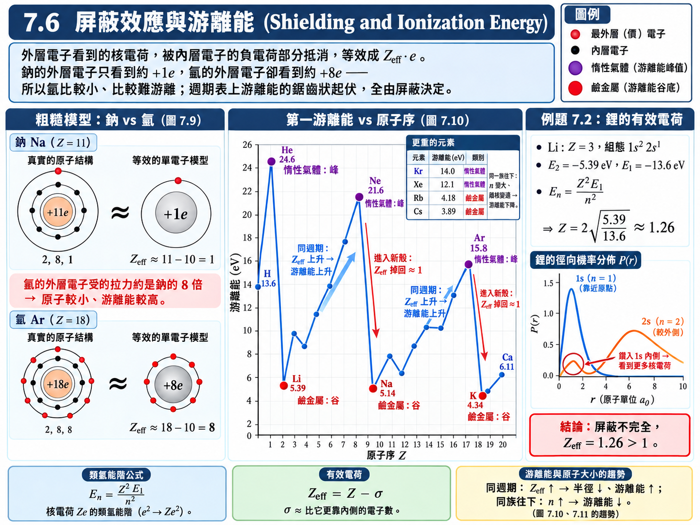
推導：屏蔽的粗糙模型——鈉與氬（圖 7.9）#
鈉 (\(Z = 11\))： 組態 \(1s^2 2s^2 2p^6 3s^1\)。最外層的 \(3s\) 電子位在 \(10\) 個內層電子（\(K\)、\(L\) 殼）的外側：
氬 (\(Z = 18\))： 組態 \(1s^2 2s^2 2p^6 3s^2 3p^6\)。最外層 \(M\) 殼有 \(8\) 個電子，它們與彼此處在同一層，互相之間屏蔽很差；真正擋在它們內側的只有 \(10\) 個 \(K\)、\(L\) 電子：
在這個粗糙模型中，氬的外層電子被拉住的力量是鈉的 \(8\) 倍。因此氬原子比較小、游離能比較高。真實原子中各電子的機率分布會以複雜的方式重疊，屏蔽也不會這麼乾淨，但基本效應相同。
例題 7.2：鋰原子 \(2s\) 電子的有效電荷#
題目： 鋰 (Li) 的游離能為 \(5.39 \ \text{eV}\)，利用此數值求出作用在鋰原子外層電子 (\(2s\)) 的有效電荷。
解答：
若有效核電荷為 \(Ze\) 而非 \(e\)，由【已知 1】
對 \(2s\) 電子 \(n = 2\)，其能量為 \(E_2 = -5.39 \ \text{eV}\)（游離能的負值）；氫原子 \(E_1 = -13.6 \ \text{eV}\)。解出 \(Z\)：
有效電荷為 \(1.26e\)，而不是 \(e\)。
【物理知識回顧】 若屏蔽是完美的，鋰的 \(3e\) 核電荷被兩個 \(1s\) 電子擋掉 \(2e\)，外層電子應該剛好看到 \(1e\)。實際算出 \(1.26e\)，代表屏蔽並不完全：如圖 6.11 所示，\(2s\) 電子的徑向機率密度在原子核附近有一個小峰，它有一定的機率鑽到 \(1s\) 電子的內側，在那裡看到幾乎完整的 \(3e\)。這個「鑽入 (penetration)」效應，正是下面解釋 \(4s\) 比 \(3d\) 先填的關鍵。
游離能與原子半徑（圖 7.10、圖 7.11）#
有了屏蔽的概念，圖 7.10 的游離能與圖 7.11 的原子半徑就可以逐一解釋：
同一週期由左到右： 核電荷每次加一，新加入的電子卻跟前面的電子在同一殼、互相屏蔽很差，\(Z_{\text{eff}}\) 持續上升 \(\to\) 電子被拉得更緊 \(\to\) 半徑變小、游離能變大，到惰性氣體達到峰值（氦 \(24.6 \ \text{eV}\)、氖 \(21.6 \ \text{eV}\)、氬 \(15.8 \ \text{eV}\)）。
跨入下一週期： 新電子必須進入一個新的殼，內側多了一整層屏蔽，\(Z_{\text{eff}}\) 掉回 \(1\) 左右、距離又遠 \(\to\) 半徑突然變大、游離能驟降，鹼金屬落在谷底（鋰 \(5.39 \ \text{eV}\)、鈉 \(5.14 \ \text{eV}\)、鉀 \(4.34 \ \text{eV}\)）。
同一族由上到下： \(n\) 愈大，外層電子離原子核愈遠，愈容易被拿走 \(\to\) 游離能遞減（銫只有 \(3.89 \ \text{eV}\)）。
用電子組態解釋各族的化學性質#
惰性氣體： 最外層的殼或 \(p\) 子殼剛好填滿（\(\text{He}: 1s^2\)；\(\text{Ne}: \dots 2p^6\)；\(\text{Ar}: \dots 3p^6\)）。總角動量為零、電荷分布球對稱、游離能極高，又沒有任何空位可以接收電子——既不想把電子分給別人，也不想拿別人的電子，所以不參與化學反應。
鹼金屬： 在填滿的核心之外只多一個 \(s\) 電子，它看到的 \(Z_{\text{eff}} \approx 1\)，很容易被拿走而形成 \(+1\) 價的離子，因此活性極強。往下走 \(n\) 愈大、電子離核愈遠，活性愈強——這就是圖 7.6「金屬活性往下遞增」的原因。
金屬（一般）： 外層只有少數幾個束縛很鬆的電子，很容易與其他原子共享——這正是金屬能導電的原因（第十章會從能帶的角度重新理解）。
鹵素： \(p\) 子殼只差一個就填滿（\(\text{F}: \dots 2p^5\)；\(\text{Cl}: \dots 3p^5\)）。它們的 \(Z_{\text{eff}}\) 很大，會強烈吸引一個外來電子把子殼補滿，形成 \(-1\) 價的離子——這就是非金屬的活性（搶電子的能力）。原子愈小、外層離原子核愈近，搶到的電子被抓得愈緊，所以非金屬活性往上遞增，氟最強。
推導：為什麼 \(4s\) 比 \(3d\) 先填#
若電子只照 \(n\) 由小到大填，\(3p\) 填滿之後應該接著填 \(3d\)。但實驗發現：鉀 (\(Z = 19\)) 的最後一個電子進入的是 \(4s\) 而不是 \(3d\)——\(4s\) 的能量比 \(3d\) 低，雖然它的 \(n\) 比較大。
原因就是鑽入效應。由【已知 2】，\(4s\) 有 \(3\) 個徑向節點，機率分布在原子核附近有好幾個內側小峰；由【已知 3】，\(3d\) 的離心項 \(l\left( l+1 \right) = 6\) 很大，把它推離原子核，機率幾乎全部落在 \(1s^2 2s^2 2p^6 3s^2 3p^6\) 這個核心的外側。於是由【假設 1】：
\(4s\) 電子有一部分時間鑽進核心內部，看到部分未被屏蔽的核電荷，\(Z_{\text{eff}}\) 明顯大於 \(1\)；
\(3d\) 電子幾乎完全在核心外側，\(18\) 個核心電子把 \(19e\) 擋掉 \(18e\)，\(Z_{\text{eff}} \approx 1\)。
以鉀為例，用例題 7.2 的方法反求兩者的有效電荷。鉀的 \(4s\) 電子游離能為 \(4.34 \ \text{eV}\)；若把外層電子激發到 \(3d\)，光譜量得它的束縛能只剩約 \(1.67 \ \text{eV}\)：
\(3d\) 電子的 \(Z_{\text{eff}}\) 幾乎剛好是 \(1\)，它的能量 (\(-1.67 \ \text{eV}\)) 幾乎就是氫原子 \(n = 3\) 的能量 (\(-13.6/9 \approx -1.51 \ \text{eV}\))——它就像繞著一顆帶 \(+1e\) 的「大核心」轉的氫原子。而 \(4s\) 電子靠著鑽入效應多拿到一倍以上的有效電荷，能量 (\(-4.34 \ \text{eV}\)) 因此遠低於 \(3d\)。
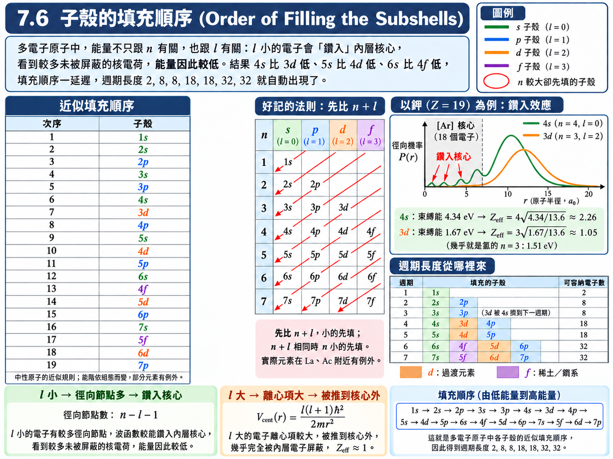
子殼的填充順序（圖 7.12）#
同樣的競爭在更高的殼層反覆出現：\(5s\) 比 \(4d\) 低、\(6s\) 比 \(4f\) 與 \(5d\) 低……。依能量由低到高排列，電子子殼的填充順序為
一個好記的經驗法則是：先比 \(n + l\)，小的先填；\(n + l\) 相同時，\(n\) 小的先填（Madelung 法則）。例如 \(3d\) (\(3+2 = 5\)) 與 \(4p\) (\(4+1 = 5\)) 平手，\(n\) 較小的 \(3d\) 先填；\(4s\) (\(4+0 = 4\)) 則比兩者都小。（投影片把最後兩項寫成 \(6d\)、\(5f\)；依此法則 \(5f\) 應在 \(6d\) 之前，與 \(4f\) 在 \(5d\) 之前同理。實際元素在這一帶有不少例外，例如錒先放一個電子進 \(6d\) 才開始填 \(5f\)，法則只是一個近似的指引。）
把這個順序依「每遇到新的 \(ns\) 就開始一個新週期」切開，週期的長度就自動出現了：
週期 |
依序填入的子殼 |
元素數 |
|---|---|---|
1 |
\(1s\) |
\(2\) |
2 |
\(2s\)、\(2p\) |
\(2 + 6 = 8\) |
3 |
\(3s\)、\(3p\) |
\(2 + 6 = 8\) |
4 |
\(4s\)、\(3d\)、\(4p\) |
\(2 + 10 + 6 = 18\) |
5 |
\(5s\)、\(4d\)、\(5p\) |
\(2 + 10 + 6 = 18\) |
6 |
\(6s\)、\(4f\)、\(5d\)、\(6p\) |
\(2 + 14 + 10 + 6 = 32\) |
7 |
\(7s\)、\(5f\)、\(6d\)、\(7p\) |
\(2 + 14 + 10 + 6 = 32\) |
\(7.4\) 節的第一個問題就這樣解決了： 週期長度 \(2, 8, 8, 18, 18, 32, 32\) 不是殼的容量，而是「兩個 \(s\) 之間夾了哪些子殼」的容量總和。第三週期只有 \(8\) 個元素，正是因為 \(3d\) 被 \(4s\) 擠到第四週期去了。
過渡元素： 第四週期在 \(4s\) 填好之後才開始填 \(3d\)，於是從鈧 (\(Z = 21\)) 到鋅 (\(Z = 30\)) 這十個元素，最外層都是 \(4s^2\)（少數例外如鉻 \(3d^5 4s^1\)、銅 \(3d^{10}4s^1\)，半滿或全滿的 \(d\) 子殼特別穩定），變動的只是內側的 \(3d\)。決定化學性質的最外層電子幾乎一樣，所以它們性質相近、全部是金屬——這就是第 2 族與第 3 族之間「過渡」的那一段。\(4d\)、\(5d\) 依此類推。
稀土元素（鑭系）： 第六週期填完 \(6s\) 之後才輪到 \(4f\)。\(4f\) 子殼在空間上深埋在 \(5s\)、\(5p\)、\(6s\) 電子的內側，加多少個 \(4f\) 電子幾乎不影響最外層，因此這十幾個元素的化學性質幾乎一模一樣，化學上極難分離。錒系元素的 \(5f\) 同理。
表 7.4 元素的電子組態（節錄）#
以 \([\text{He}]\)、\([\text{Ne}]\)、\([\text{Ar}]\) 代表對應惰性氣體的填滿核心：
\(Z\) |
元素 |
電子組態 |
說明 |
|---|---|---|---|
1 |
H |
\(1s^1\) |
|
2 |
He |
\(1s^2\) |
\(K\) 殼填滿，惰性氣體 |
3 |
Li |
\([\text{He}]\,2s^1\) |
鹼金屬 |
6 |
C |
\([\text{He}]\,2s^2 2p^2\) |
|
9 |
F |
\([\text{He}]\,2s^2 2p^5\) |
鹵素，差一個填滿 |
10 |
Ne |
\([\text{He}]\,2s^2 2p^6\) |
\(L\) 殼填滿，惰性氣體 |
11 |
Na |
\([\text{Ne}]\,3s^1\) |
鹼金屬 |
14 |
Si |
\([\text{Ne}]\,3s^2 3p^2\) |
四個價電子 |
17 |
Cl |
\([\text{Ne}]\,3s^2 3p^5\) |
鹵素 |
18 |
Ar |
\([\text{Ne}]\,3s^2 3p^6\) |
\(3p\) 填滿，惰性氣體 |
19 |
K |
\([\text{Ar}]\,4s^1\) |
\(4s\) 先於 \(3d\) |
20 |
Ca |
\([\text{Ar}]\,4s^2\) |
|
21 |
Sc |
\([\text{Ar}]\,3d^1 4s^2\) |
第一個過渡元素 |
24 |
Cr |
\([\text{Ar}]\,3d^5 4s^1\) |
例外：半滿 \(3d\) |
29 |
Cu |
\([\text{Ar}]\,3d^{10} 4s^1\) |
例外：全滿 \(3d\) |
30 |
Zn |
\([\text{Ar}]\,3d^{10} 4s^2\) |
|
36 |
Kr |
\([\text{Ar}]\,3d^{10} 4s^2 4p^6\) |
惰性氣體 |
對電機系而言，表中最值得記的一列是矽：\(3s^2 3p^2\) 共四個價電子。把第 5 族的磷（多一個價電子）或第 3 族的硼（少一個價電子）摻進矽晶體，就是 n 型與 p 型半導體的由來（第十章）。
宏德規則 (Hund’s Rule)#
到目前為止我們只決定了電子進入哪個子殼，還沒決定在子殼內怎麼擺自旋。以 \(p\) 子殼為例，它有三個軌域（\(m_l = -1, 0, +1\)），兩個電子可以擠進同一個軌域（自旋相反），也可以分開放在兩個軌域。實驗告訴我們：
宏德規則： 同一子殼中的電子，會盡可能分別佔據不同的 \(m_l\) 軌域，並且自旋彼此平行；等每個軌域都放了一個之後，才開始放自旋相反的第二個。
表 7.5 \(Z = 5\) 到 \(Z = 10\) 元素的電子組態與 \(p\) 電子的自旋
元素 |
原子序 |
組態 |
\(p\) 電子的自旋（三個軌域） |
|---|---|---|---|
硼 B |
5 |
\(1s^2 2s^2 2p^1\) |
\(\uparrow\) |
碳 C |
6 |
\(1s^2 2s^2 2p^2\) |
\(\uparrow\) \(\uparrow\) |
氮 N |
7 |
\(1s^2 2s^2 2p^3\) |
\(\uparrow\) \(\uparrow\) \(\uparrow\) |
氧 O |
8 |
\(1s^2 2s^2 2p^4\) |
\(\uparrow\downarrow\) \(\uparrow\) \(\uparrow\) |
氟 F |
9 |
\(1s^2 2s^2 2p^5\) |
\(\uparrow\downarrow\) \(\uparrow\downarrow\) \(\uparrow\) |
氖 Ne |
10 |
\(1s^2 2s^2 2p^6\) |
\(\uparrow\downarrow\) \(\uparrow\downarrow\) \(\uparrow\downarrow\) |
（沒有外加磁場時，「上」與「下」沒有絕對的意義；這裡的重點只是「先放平行的，再放反平行的」。）
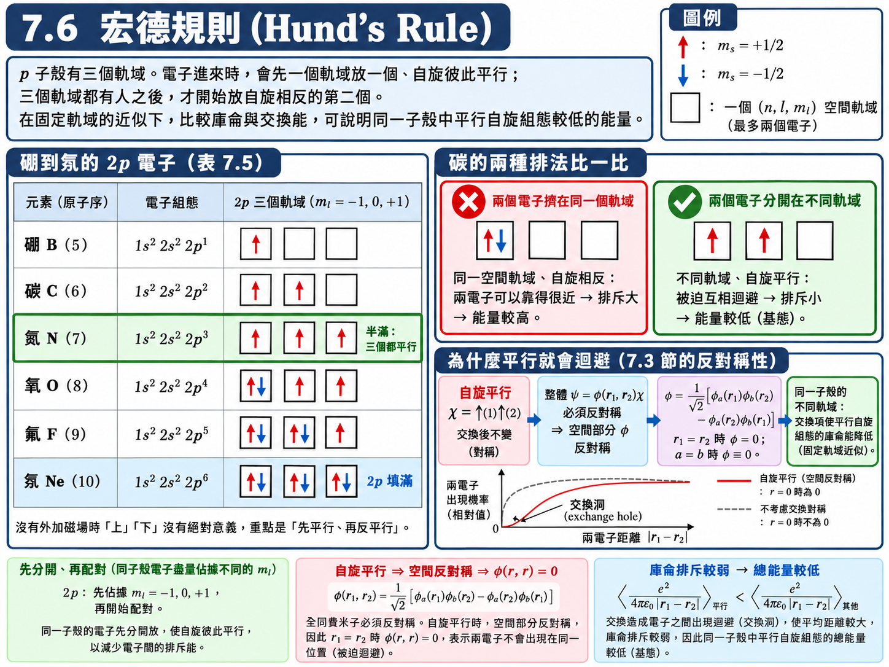
推導：宏德規則的物理來源#
物理上的直覺是：自旋平行的電子在空間中會彼此離得比較遠，電子間的庫侖排斥因而比較弱，總能量比較低。這句話可以用【已知 4】與【假設 2】，也就是 \(7.3\) 節的對稱性論證說清楚。
兩個電子自旋平行（都向上）時，自旋部分為 \(\chi = \uparrow\left( 1 \right)\uparrow\left( 2 \right)\)，交換後不變，是對稱的。整體要反對稱，空間部分就只能反對稱：
依 \((7.12)\) 的形式，兩電子分別在空間軌域 \(\phi_a\)、\(\phi_b\) 時：
由此讀出兩個結論：
若 \(a = b\)，\(\phi \equiv 0\)——自旋平行的兩個電子不能在同一個空間軌域，必須分開放在不同的 \(m_l\)。這就是宏德規則中「分別佔據不同軌域」的部分。
令 \(\vec{r}_1 = \vec{r}_2\)，\(\phi = 0\)——自旋平行的兩個電子出現在同一位置的機率為零，它們在空間上被迫彼此迴避，平均距離比較大，庫侖排斥 \(e^2/\left( 4\pi\varepsilon_0\left| \vec{r}_1 - \vec{r}_2 \right| \right)\) 的平均值因而比較小，總能量比較低。
因此在能量最低原理之下，電子會優先選擇「分開放、自旋平行」的排法。
【物理知識回顧】 回頭看 \(7.4\) 節的四個問題，本節已經全部回答：週期長度來自子殼的填充順序；同族相似是因為最外層組態相同；左金屬、右非金屬、最右惰性，是由外層電子數與有效核電荷決定；過渡元素與稀土元素則是 \(d\)、\(f\) 子殼被「延後」到內側才填的結果。
這些趨勢結合了量子數、自旋、包立不相容原理、屏蔽與能量比較。宏德第一規則可用交換作用理解，但單靠反對稱性，尚不能決定所有組態的能量高低；仍須考慮哈密頓量中的動能及庫侖交互作用。
7.7 自旋—軌道耦合 (Spin-Orbit Coupling)#
週期表已經解釋完了，但 \(7.1\) 節開頭的兩個謎題——精細結構與異常塞曼效應——還沒有交代。它們的來源是自旋—軌道耦合 (spin-orbit coupling)。
物理學家說兩件事「耦合 (coupling)」，用語並不十分嚴格，大致上就是「兩者之間有交互作用」。現在電子身上有兩種角動量：軌道角動量 \(\vec{L}\) 與自旋角動量 \(\vec{S}\)，兩者都伴隨著磁矩。磁矩放在磁場裡會有磁能——但問題是，沒有外加磁場的時候，自旋要跟什麼磁場作用？
答案要換一個參考座標系來看。站在原子核上看，是電子繞著原子核轉；但如果站在電子上看，看到的是帶正電的原子核繞著自己轉——就像古人站在地球上，看到的是太陽繞著地球轉。帶電的原子核繞著電子轉，就是一個電流迴路 (current loop)，它在迴路中心——也就是電子所在的位置——產生磁場。電子的自旋磁矩就跟這個「軌道運動所產生的磁場」交互作用。磁矩 \(\vec{\mu}\) 來自自旋，磁場 \(\vec{B}\) 來自軌道，所以叫自旋—軌道耦合。
這件事不需要任何外加磁場，在每一個原子裡都會發生，連最簡單的氫原子也不例外。
假設與已知 (Assumptions & Preliminaries)#
【已知 1】 磁偶極在磁場中的位能 (Potential energy of a magnetic dipole)： 即 \((6.38)\)。\(\mu\cos\theta\) 就是磁矩在磁場方向上的分量。
\[U_m = -\mu B\cos\theta\]\(\theta\) : 磁矩與磁場的夾角 (Angle between \(\vec{\mu}\) and \(\vec{B}\))，\([\text{rad}]\)
【已知 2】 \((7.4)\) 式： 自旋磁矩在任一方向（這裡取磁場方向）的分量為 \(\pm\mu_B\)。
\[\mu_{sz} = \pm\mu_B\]【已知 3】 圓形電流迴路中心的磁場 (Field at the center of a circular current loop)： 由必歐—沙伐定律 (Biot–Savart law) 得到的古典電磁學結論，方向由右手定則決定，垂直於迴路平面。
\[B = \frac{\mu_0 I}{2r}\]\(\mu_0\) : 真空磁導率 (Vacuum permeability)，\(\mu_0 = 4\pi \times 10^{-7} \ \text{T}\cdot\text{m}\cdot\text{A}^{-1}\)
\(I\) : 迴路電流 (Loop current)，\([\text{A}]\)
\(r\) : 迴路半徑 (Loop radius)，\([\text{m}]\)
【已知 4】 電流的定義 (Definition of current)： 每秒通過某一點的電荷量。電荷 \(+e\) 每秒繞行 \(f\) 圈，每一圈經過某一點一次：
\[I = ef\]\(f\) : 繞行頻率 (Orbital frequency)，\([\text{s}^{-1}]\)
【已知 5】 波耳模型的軌道 (Orbits of the Bohr model)： 第四章的結果：第 \(n\) 個軌道的半徑，以及由向心力 \(=\) 庫侖力得到的軌道速率；繞行頻率則是速率除以周長。
\[\begin{split}\begin{gather*} r_n &=& n^2 a_0 \\ v &=& \frac{e}{\sqrt{4\pi\varepsilon_0 m r}} \\ f &=& \frac{v}{2\pi r} \end{gather*}\end{split}\]\(a_0\) : 波耳半徑 (Bohr radius)，\(a_0 \approx 5.29 \times 10^{-11} \ \text{m}\)
\(v\) : 軌道速率 (Orbital speed)，\([\text{m}\cdot\text{s}^{-1}]\)
【假設 1】 改用電子的參考座標系 (Electron rest frame)： 運動是相對的。在電子的座標系中，原子核以同樣的半徑、同樣的頻率、同樣的繞行方向繞著電子轉，因此它在電子處產生的磁場方向與電子的軌道角動量 \(\vec{L}\) 平行。此處忽略相對論性的座標系修正（托馬斯進動 Thomas precession），只做數量級估算。
\[\vec{B} \parallel \vec{L}\]
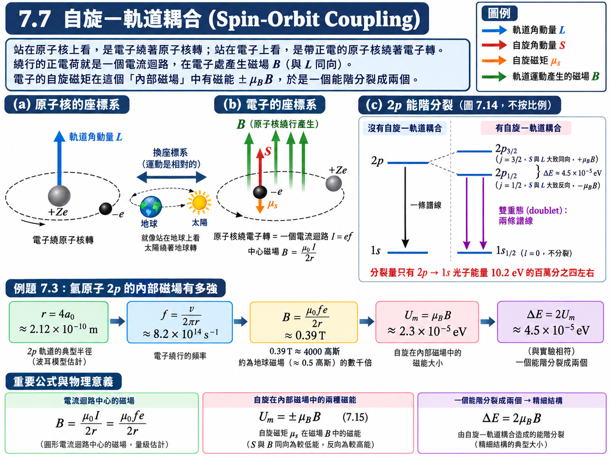
推導：自旋在軌道磁場中的磁能#
把自旋磁矩放進軌道運動產生的磁場 \(B\) 中，取磁場方向為 \(z\) 軸：
\(U_m\) : 自旋—軌道耦合的磁能 (Spin-orbit magnetic energy)，\([\text{J}]\)，\([\text{eV}]\)
\(B\) : 電子處由軌道運動產生的磁場 (Internal orbital field)，\([\text{T}]\)
兩個符號對應兩種自旋方向。由 \((7.3)\)，電子的自旋磁矩與 \(\vec{S}\) 反向；再由【假設 1】\(\vec{B} \parallel \vec{L}\)：
\(\vec{S}\) 與 \(\vec{L}\) 大致同向：\(\vec{\mu}_s\) 與 \(\vec{B}\) 反向，\(U_m = +\mu_B B\)，能量升高；
\(\vec{S}\) 與 \(\vec{L}\) 大致反向：\(\vec{\mu}_s\) 與 \(\vec{B}\) 同向，\(U_m = -\mu_B B\)，能量降低。
原本一個能階（例如 \(2p\)）因此分裂成兩個，間距為
例題 7.3：氫原子 \(2p\) 態的自旋—軌道磁能#
題目： 利用波耳模型中 \(n = 2\) 的態對應於 \(2p\) 態，估計氫原子中 \(2p\) 態電子的磁能 \(U_m\)。
解答：
先由【已知 5】求 \(n = 2\) 的軌道半徑、速率與繞行頻率：
（投影片寫作 \(8.4 \times 10^{14} \ \text{s}^{-1}\)，差異來自 \(r\) 取到兩位有效數字 \(2.1 \times 10^{-10} \ \text{m}\) 等四捨五入，不影響結論。）
由【假設 1】，電子「看到」帶電 \(+e\) 的原子核每秒繞自己 \(f\) 圈，相當於一個電流迴路。把【已知 4】代入【已知 3】：
這是一個相當強的磁場。再由 \((7.15)\)：
上下兩個子態的能量差為此能量的兩倍：
與實驗觀測到的 \(2p\) 能階分裂（約 \(4.5 \times 10^{-5} \ \text{eV}\)，圖 7.14）非常接近。
【物理知識回顧】 \(0.39 \ \text{T}\) 有多大？ \(1 \ \text{T} = 10^4\) 高斯，所以這大約是 \(4000\) 高斯；地球磁場只有約 \(0.5\) 高斯，原子內部這個「看不見」的磁場是地表磁場的好幾千倍。即使完全沒有外加磁場，原子裡的電子也一直泡在一個相當強的軌道磁場裡。
\(4.5 \times 10^{-5} \ \text{eV}\) 有多小？ \(2p \to 1s\) 的光子能量是 \(10.2 \ \text{eV}\)，分裂量只有它的百萬分之四左右。但只要光譜儀夠準，從 \(2p\) 的上、下兩個子態掉下來的光子就是兩種不同的能量，一條譜線變成兩條（圖 7.14）——這就是精細結構的來源。
可以用這個數字回頭驗證 \(7.1\) 節的 \(\text{H}_\alpha\) 雙線。\(\text{H}_\alpha\) 的下能階是 \(n = 2\)，把能量差換成波長差（與例題 6.4 相同的 \(\left| \Delta\lambda \right| = \lambda^2\Delta\nu/c\)）：
與實測的雙線間距 \(0.14 \ \text{Å} = 0.014 \ \text{nm}\) 同一數量級（\(n = 3\) 的能階也有較小的分裂，會把間距稍微拉近）。這也佐證了投影片上的「\(0.14 \ \text{nm}\)」應為 \(0.14 \ \text{Å}\)。
最後要提醒：這個估算刻意做得很粗糙——用了波耳軌道、忽略了相對論修正（托馬斯進動會把結果減半，另有其他相對論效應補回），吻合得這麼好有一部分是幸運；但數量級是可靠的。另外，\(s\) 態 (\(l = 0\)) 沒有軌道角動量，就沒有軌道磁場，也就不會因自旋—軌道耦合而分裂。在多電子原子中，自旋—軌道耦合會更複雜，而且原子愈重效應愈強（例如鈉的黃色 D 雙線，見附錄）。
7.8 總角動量 (Total Angular Momentum)#
上一節的分裂取決於 \(\vec{S}\) 與 \(\vec{L}\)「大致同向」還是「大致反向」。要把這件事講精確，就必須把兩種角動量合起來看。角動量是向量，就像高中物理裡不同方向的轉動可以做向量相加一樣，原子中電子的總角動量 (total angular momentum) 就是軌道角動量與自旋角動量的向量和。
在開始之前，先把符號講清楚——這是本節最容易搞混的地方。同一種角動量會有三種符號：
意義 |
寫法 |
例（軌道） |
例（自旋） |
例（總角動量） |
|---|---|---|---|---|
向量 |
帶箭頭（課本用粗體） |
\(\vec{L}\) |
\(\vec{S}\) |
\(\vec{J}\) |
向量的大小 |
大寫斜體 |
\(L = \sqrt{l\left( l+1 \right)}\hbar\) |
\(S = \sqrt{s\left( s+1 \right)}\hbar\) |
\(J = \sqrt{j\left( j+1 \right)}\hbar\) |
量子數 |
小寫斜體（單電子） |
\(l\) |
\(s\) |
\(j\) |
\(z\) 投影的量子數 |
\(m\) 加下標 |
\(m_l\) |
\(m_s\) |
\(m_j\) |
多電子原子的總量子數則沿用課本的無襯線大寫 \(\mathsf{L}\)、\(\mathsf{S}\)、\(\mathsf{J}\)（與 \(M_L\)、\(M_S\)、\(M_J\)），以便與「大小」\(L\)、\(S\)、\(J\) 區分。
假設與已知 (Assumptions & Preliminaries)#
【已知 1】 角動量量子化的通則： \(7.1\) 節【已知 1】。\(m_a\) 從 \(-a\) 到 \(+a\) 共 \(2a+1\) 個值，而且最大的那個投影 \(m_a = a\) 一定屬於量子數為 \(a\) 的那一組——換言之，一組態中出現的最大投影量子數，就是這組態的量子數。
\[\begin{split}\begin{gather*} \left| \vec{A} \right| &=& \sqrt{a\left( a+1 \right)}\,\hbar \\ A_z &=& m_a\hbar, \qquad m_a = -a, \dots, +a \end{gather*}\end{split}\]\(a\) : 角動量量子數 (Angular-momentum quantum number)，\([\text{無單位}]\)
\(m_a\) : 投影量子數 (Projection quantum number)，\([\text{無單位}]\)
【已知 2】 軌道與自旋角動量： \((6.21)\)、\((6.22)\)、\((7.1)\)、\((7.2)\)。
\[\begin{split}\begin{gather*} L &=& \sqrt{l\left( l+1 \right)}\,\hbar, \qquad L_z = m_l\hbar \\ S &=& \sqrt{s\left( s+1 \right)}\,\hbar, \qquad S_z = m_s\hbar \end{gather*}\end{split}\]【假設 1】 總角動量為向量和 (Total angular momentum as a vector sum)：
\[\vec{J} = \vec{L} + \vec{S} \tag{7.16}\]\(\vec{J}\) : 電子的總角動量 (Total angular momentum)，\([\text{J}\cdot\text{s}]\)
【已知 3】 餘弦定律 (Law of cosines)： 兩向量之和的長度平方。
\[\left| \vec{A} + \vec{B} \right|^2 = A^2 + B^2 + 2\vec{A}\cdot\vec{B}\]【假設 2】 進動與時間平均 (Precession and time averaging)： 由於自旋—軌道耦合，\(\vec{L}\) 與 \(\vec{S}\) 以固定的夾角繞著 \(\vec{J}\) 快速進動；在弱的外加磁場中，\(\vec{J}\) 再繞著 \(\vec{B}\) 緩慢進動。對外加磁場而言，任何垂直於 \(\vec{J}\) 的分量都在快速進動中平均為零，只有沿著 \(\vec{J}\) 的分量存活。（只在最後的「進階探討」用到。）
推導：\(j\) 的可能值#
由【假設 1】，總角動量的 \(z\) 分量是兩者 \(z\) 分量的和：
\(m_j\) 最大的可能是 \(m_l = l\) 且 \(m_s = +\tfrac{1}{2}\)。由【已知 1】，最大的投影必屬於量子數最大的那一組，因此
接著數態的數目。換一種描述方式不會讓態變多或變少：用 \(\left( m_l, m_s \right)\) 描述時共有 \(\left( 2l+1 \right) \times 2\) 個態；改用 \(\left( j, m_j \right)\) 描述時，\(j_{\max}\) 這一組佔掉 \(2j_{\max}+1\) 個，剩下的必須湊成另一組：
剛好用完，沒有第三組。（\(l = 0\) 時只有 \(2\) 個態，只剩 \(j = \tfrac{1}{2}\) 一組。）因此
\(J\) : 總角動量的大小 (Magnitude of the total angular momentum)，\([\text{J}\cdot\text{s}]\)
\(j\) : 總角動量量子數 (Total angular-momentum quantum number)，單電子時為半整數，\([\text{無單位}]\)
方向同樣被量子化：
\(m_j\) : 總角動量的投影量子數 (Projection quantum number of \(\vec{J}\))，\([\text{無單位}]\)
這兩條與 \(\left( 6.21 \right)\left( 6.22 \right)\)、\(\left( 7.1 \right)\left( 7.2 \right)\) 完全同型——只要是角動量，大小與方向就都要量子化。
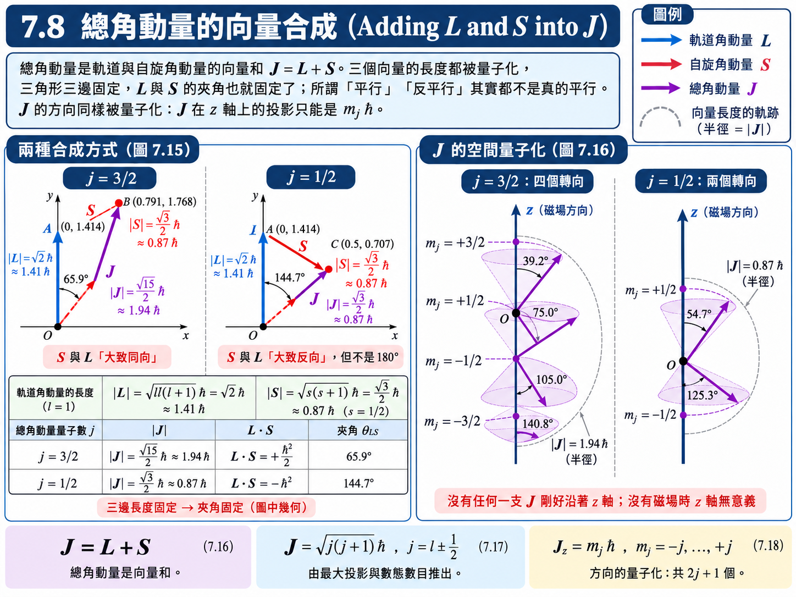
推導：\(\vec{L}\) 與 \(\vec{S}\) 的夾角是固定的（圖 7.15）#
\(\vec{L}\)、\(\vec{S}\)、\(\vec{J}\) 三者的長度都被量子化而固定了。三角形三邊長度都固定，三個角也就跟著固定——這是國中幾何的結論。用【已知 3】把夾角算出來：
以 \(l = 1\) 為例，\(L = \sqrt{2}\,\hbar\)、\(S = \tfrac{\sqrt{3}}{2}\hbar\)：
\(j = \tfrac{3}{2}\) |
\(j = \tfrac{1}{2}\) |
|
|---|---|---|
\(J\) |
\(\tfrac{\sqrt{15}}{2}\hbar \approx 1.94\hbar\) |
\(\tfrac{\sqrt{3}}{2}\hbar \approx 0.87\hbar\) |
\(\vec{L}\cdot\vec{S}\) |
\(\tfrac{1}{2}\left( \tfrac{15}{4} - 2 - \tfrac{3}{4} \right)\hbar^2 = +\tfrac{1}{2}\hbar^2\) |
\(\tfrac{1}{2}\left( \tfrac{3}{4} - 2 - \tfrac{3}{4} \right)\hbar^2 = -\hbar^2\) |
\(\cos\theta_{LS} = \dfrac{\vec{L}\cdot\vec{S}}{LS}\) |
\(+0.408\) |
\(-0.816\) |
\(\vec{L}\) 與 \(\vec{S}\) 的夾角 |
\(\approx 65.9^\circ\) |
\(\approx 144.7^\circ\) |
兩點值得注意：
所謂「自旋與軌道平行」(\(j = l + \tfrac{1}{2}\)) 其實夾了約 \(66^\circ\)，「反平行」(\(j = l - \tfrac{1}{2}\)) 也只有約 \(145^\circ\)——從來不是真正的平行或反平行，「上」與「下」只是約定俗成的說法。
由 \(7.7\) 節【假設 1】的 \(\vec{B} \parallel \vec{L}\) 與 \((7.3)\)，自旋—軌道磁能 \(-\vec{\mu}_s\cdot\vec{B}\) 正比於 \(+\vec{L}\cdot\vec{S}\)。\(j = \tfrac{3}{2}\) 時 \(\vec{L}\cdot\vec{S} > 0\)，能量升高；\(j = \tfrac{1}{2}\) 時 \(\vec{L}\cdot\vec{S} < 0\)，能量降低。所以 \(2p\) 分裂後，\(j = \tfrac{3}{2}\) 在上、\(j = \tfrac{1}{2}\) 在下（圖 7.14）。
例題 7.4：\(l = 1\) 時 \(\vec{J}\) 的可能轉向#
題目： 對應於 \(l = 1\) 的 \(j = \tfrac{3}{2}\) 和 \(j = \tfrac{1}{2}\) 態而言，\(\vec{J}\) 的可能轉向為何？
解答：
由 \((7.18)\)，\(m_j\) 從 \(-j\) 到 \(+j\)、每次差 \(1\)：
\(\vec{J}\) 與 \(z\) 軸的夾角由 \(\cos\theta = J_z/J = m_j/\sqrt{j\left( j+1 \right)}\) 決定：
\(j = \tfrac{3}{2}\) 的 \(\vec{J}\) 長度為 \(\tfrac{\sqrt{15}}{2}\hbar\)，有 \(4\) 個允許的轉向；\(j = \tfrac{1}{2}\) 的長度為 \(\tfrac{\sqrt{3}}{2}\hbar\)，只有 \(2\) 個（圖 7.16）。
【物理知識回顧】 \(j\) 決定總角動量平方的本徵值，\(m_j\) 決定對選定軸的投影。圓錐是向量模型的示意，不能當成各分量同時具有確定值的古典向量。磁場提供自然的量子化軸；沒有磁場時仍可自行選軸，\(J_z\) 並非沒有物理意義。
多電子原子：LS 耦合#
一個原子若有好幾個電子在沒填滿的子殼裡，它們的角動量要怎麼合起來？對於大多數較輕的原子，電子之間的靜電交互作用比各自的自旋—軌道耦合強得多，於是先把所有電子的軌道角動量合成一個總 \(\vec{L}\)、所有自旋合成一個總 \(\vec{S}\)，最後再把兩者合成 \(\vec{J}\)，這稱為 LS 耦合 (LS coupling)，又稱羅素—桑德斯耦合 (Russell–Saunders coupling)：
\(\vec{L}_i, \vec{S}_i\) : 第 \(i\) 個電子的軌道與自旋角動量 (Orbital and spin angular momenta of electron \(i\))
填滿的殼與子殼由 \(7.5\) 節貢獻為零，求和只需包含外層電子。
三個總角動量同樣都要依【已知 1】量子化：
\(\mathsf{L}, \mathsf{S}, \mathsf{J}\) : 原子的總軌道、總自旋、總角動量量子數 (Total quantum numbers of the atom)，\([\text{無單位}]\)
\(M_L, M_S, M_J\) : 對應的 \(z\) 投影量子數 (Projection quantum numbers)，\([\text{無單位}]\)
兩個量子數 \(a\)、\(b\) 的角動量相加時，前面推導 \(j = l \pm \tfrac{1}{2}\) 的「最大投影 + 數態」論證可以一般化：合成後的量子數 \(c\) 從 \(\left| a - b \right|\) 開始、每次加 \(1\)，一直到 \(a + b\)。這就是量子版的三角不等式。（重原子的自旋—軌道耦合很強，會先把每個電子的 \(\vec{L}_i\) 與 \(\vec{S}_i\) 合成 \(\vec{J}_i\)，再把各個 \(\vec{J}_i\) 相加，稱為 jj 耦合；本課程不深入。）
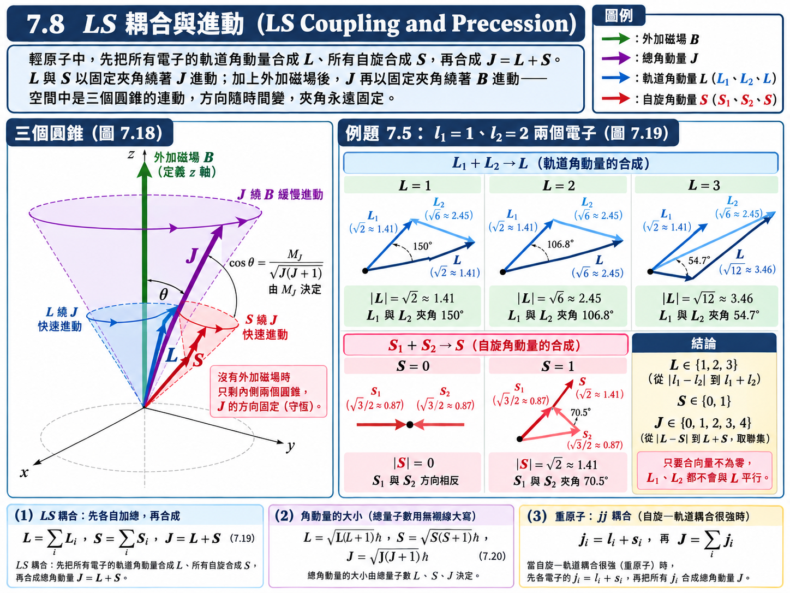
進動：三個圓錐（圖 7.18）#
上面在平面上畫的向量三角形只是一個瞬間。在三維空間中，只要與 \(\vec{J}\) 的夾角維持固定，\(\vec{L}\) 可以落在以 \(\vec{J}\) 為軸的整個圓錐上的任何位置，\(\vec{S}\) 亦然。由於自旋—軌道耦合產生的力矩，\(\vec{L}\) 與 \(\vec{S}\) 會繞著 \(\vec{J}\) 做圓錐運動，稱為進動 (precession)；而 \(\vec{J}\) 是守恆量，沒有外力矩時方向固定。
加上外加磁場 \(\vec{B}\) 後，\(\vec{J}\) 本身又會以 \(M_J\) 決定的固定夾角繞著 \(\vec{B}\) 進動。於是空間中是三個圓錐的連動：\(\vec{L}\)、\(\vec{S}\) 繞 \(\vec{J}\) 轉，\(\vec{J}\) 再繞 \(\vec{B}\) 轉。各向量的方向隨時間改變，但彼此之間的夾角全部固定，因為每一個大小與投影都被量子化了。
例題 7.5：LS 耦合下可能的 \(\mathsf{J}\)#
題目： 某原子有兩個電子，其軌道量子數為 \(l_1 = 1\)、\(l_2 = 2\)。求出 LS 耦合下總角動量量子數 \(\mathsf{J}\) 的所有可能值。
解答：
第一步：合成 \(\mathsf{L}\)。 由角動量相加規則，\(\mathsf{L}\) 從 \(\left| l_1 - l_2 \right|\) 到 \(l_1 + l_2\)：
第二步：合成 \(\mathsf{S}\)。 兩個電子的 \(s_1 = s_2 = \tfrac{1}{2}\)：
\(\mathsf{S} = 0\) 對應兩自旋「反平行」，\(\mathsf{S} = 1\) 對應「平行」（圖 7.19）。
第三步：合成 \(\mathsf{J}\)。 對每一組 \(\left( \mathsf{L}, \mathsf{S} \right)\)，\(\mathsf{J}\) 從 \(\left| \mathsf{L} - \mathsf{S} \right|\) 到 \(\mathsf{L} + \mathsf{S}\)。整體的最小值與最大值為
中間的每一個整數都可以由某組 \(\left( \mathsf{L}, \mathsf{S} \right)\) 得到，故
注意：只要向量和不為零，\(\vec{L}_1\)、\(\vec{L}_2\) 就絕不會與 \(\vec{L}\) 平行，\(\vec{S}_1\)、\(\vec{S}_2\) 也絕不會與 \(\vec{S}\) 平行——理由與圖 7.15 相同，量子化的長度鎖死了三角形的形狀。
項符號 (Term Symbols)#
原子的光譜在量子力學出現之前就已經被大量量測與分類了，當時的光譜學家發展出一套至今仍在使用的記號，稱為項符號 (term symbol)：
\(n\) : 外層（價）電子的主量子數 (Principal quantum number of the outer electron)
左上標 \(2\mathsf{S}+1\) : 多重度 (multiplicity)。\(\mathsf{S} = 0\) 時為 \(1\)，稱為單態 (singlet)；\(\mathsf{S} = \tfrac{1}{2}\) 時為 \(2\)，雙重態 (doublet)；\(\mathsf{S} = 1\) 時為 \(3\)，三重態 (triplet)。它就是 \(\vec{S}\) 可能轉向的數目，也是光譜學家當年看到「一條線分成幾條」的那個數字。
中間的大寫字母 : 總軌道量子數 \(\mathsf{L}\)，依 \(\mathsf{L} = 0, 1, 2, 3, 4, \dots\) 寫成 \(\mathrm{S}, \mathrm{P}, \mathrm{D}, \mathrm{F}, \mathrm{G}, \dots\)（注意這個 \(\mathrm{S}\) 代表 \(\mathsf{L} = 0\)，與自旋量子數 \(\mathsf{S}\) 是兩回事——這是歷史留下來的不幸撞名）
右下標 : 總角動量量子數 \(\mathsf{J}\)
唸法也有慣例：\(3\,{}^2\mathrm{S}_{1/2}\) 唸作「three doublet S one-half」，而不是「三二 S 二分之一」。（當 \(\mathsf{L} < \mathsf{S}\) 時，\(\mathsf{J}\) 實際上只有 \(2\mathsf{L}+1\) 種值，例如 \({}^2\mathrm{S}_{1/2}\) 只有一個 \(\mathsf{J}\)，但仍沿用多重度的名稱稱為 doublet。）
只有一個價電子的原子（氫、鹼金屬），內部填滿的核心貢獻為零，故 \(\mathsf{S} = \tfrac{1}{2}\)、\(\mathsf{L} = l\)、\(\mathsf{J} = j\)，所有能階都是雙重態。
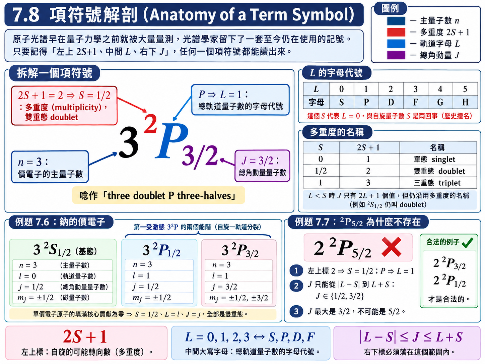
例題 7.6：鈉的基態與第一受激態#
題目： 鈉的基態項符號為 \(3\,{}^2\mathrm{S}_{1/2}\)，其第一個受激態為 \(3\,{}^2\mathrm{P}\)（包含 \(3\,{}^2\mathrm{P}_{1/2}\) 與 \(3\,{}^2\mathrm{P}_{3/2}\) 兩個能階）。列出在每種狀況中外圍電子可能的量子數 \(n, l, j, m_j\)。
解答：
依項符號逐項讀出：前面的 \(3\) 是 \(n\)；左上標 \(2\) 代表 \(\mathsf{S} = \tfrac{1}{2}\)（單一價電子）；字母給出 \(l\)；右下標給出 \(j\)；\(m_j\) 由 \((7.18)\) 列出。
（投影片題目把第一受激態寫成 \(3\,{}^2\mathrm{P}_{1/2}\)，但解答同時列出了 \(j = \tfrac{3}{2}\) 與 \(j = \tfrac{1}{2}\)；此處依課本原意，把 \(3\,{}^2\mathrm{P}\) 的兩個能階都列出。）
例題 7.7：為何 \({}^2\mathrm{P}_{5/2}\) 態不可能存在？#
題目： 為何 \(2\,{}^2\mathrm{P}_{5/2}\) 態不可能存在？
解答：
左上標 \(2 = 2\mathsf{S}+1\)，故 \(\mathsf{S} = \tfrac{1}{2}\)；字母 \(\mathrm{P}\) 代表 \(\mathsf{L} = 1\)。由角動量相加規則：
\(\mathsf{J}\) 最大只能到 \(\tfrac{3}{2}\)，不可能是 \(\tfrac{5}{2}\)。
【物理知識回顧】 本節以角動量合成規則組織單電子及多電子的狀態。向量圖提供直覺，允許的量子數則由量子角動量代數決定；項符號記錄 \(2\mathsf S+1\)、\(\mathsf L\)、\(\mathsf J\)。LS 耦合適合自旋—軌道作用相對較弱的情況，不能無條件套用於所有原子。
弱場適用條件： 下列 Landé 因子及 \(m_j\) 分裂模型假設外磁場作用弱於自旋—軌道耦合，\(j\) 仍是適當的量子數；強場下需另討論解耦。
進階探討：異常塞曼效應與 Landé \(g\) 因子#
\(7.1\) 節的第二個謎題——異常塞曼效應——現在可以收尾了。關鍵在於 \((6.39)\) 與 \((7.3)\) 的旋磁比不同：軌道是 \(e/2m\)，自旋是 \(e/m\)。原子的總磁矩為
因為自旋多了那個因子 \(2\)，\(\vec{\mu}\) 不再與 \(\vec{J} = \vec{L} + \vec{S}\) 平行。由【假設 2】，\(\vec{\mu}\) 隨著 \(\vec{L}\)、\(\vec{S}\) 繞 \(\vec{J}\) 快速進動，對外加磁場而言只有它沿 \(\vec{J}\) 的分量有效。先用【已知 3】求兩個內積：
再取 \(\vec{\mu}\) 沿 \(\vec{J}\) 的分量（投影向量）：
方括號就是 Landé \(g\) 因子。代入各角動量的大小（\(J^2 = j\left( j+1 \right)\hbar^2\) 等）：
\(g_J\) : Landé \(g\) 因子 (Landé g-factor)，\([\text{無單位}]\)
磁能則仿照 6.10 節的推導，以磁場方向為 \(z\) 軸、\(J_z = m_j\hbar\)：
兩個檢查：純軌道 (\(s = 0\)，\(j = l\)) 時 \(g_J = 1\)，回到正常塞曼效應的 \((6.41)\)；純自旋 (\(l = 0\)，\(j = s = \tfrac{1}{2}\)) 時 \(g_J = 2\)，\(U_m = 2 \cdot \left( \pm\tfrac{1}{2} \right)\mu_B B = \pm\mu_B B\)，回到 \((7.15)\)。
異常的來源： 不同能階的 \(g_J\) 不同，上下能階的分裂間距就不一樣，躍遷後的譜線不再只有三條。以鈉的 D 雙線為例：
能階 |
\(j\) |
\(g_J\) |
\(g_J m_j\)（以 \(\mu_B B\) 為單位） |
|---|---|---|---|
\(3\,{}^2\mathrm{S}_{1/2}\) |
\(\tfrac{1}{2}\) |
\(2\) |
\(\pm 1\) |
\(3\,{}^2\mathrm{P}_{1/2}\) |
\(\tfrac{1}{2}\) |
\(\tfrac{2}{3}\) |
\(\pm\tfrac{1}{3}\) |
\(3\,{}^2\mathrm{P}_{3/2}\) |
\(\tfrac{3}{2}\) |
\(\tfrac{4}{3}\) |
\(\pm\tfrac{2}{3}, \ \pm 2\) |
在 \(\Delta m_j = 0, \pm 1\) 的選擇規則下，光子能量相對於無磁場時的位移為 \(\left[ \left( g_J m_j \right)_{\text{上}} - \left( g_J m_j \right)_{\text{下}} \right]\mu_B B\)：
\(\text{D}_1\) (\(3\,{}^2\mathrm{P}_{1/2} \to 3\,{}^2\mathrm{S}_{1/2}\))：位移為 \(\pm\tfrac{2}{3}, \pm\tfrac{4}{3}\)，分裂成 4 條；
\(\text{D}_2\) (\(3\,{}^2\mathrm{P}_{3/2} \to 3\,{}^2\mathrm{S}_{1/2}\))：位移為 \(\pm\tfrac{1}{3}, \pm 1, \pm\tfrac{5}{3}\)，分裂成 6 條。
這正是圖 7.1 中「預期三條、實際四條或六條」的異常塞曼效應。歸根究柢，它來自自旋的旋磁比是軌道的兩倍。
7.9 x 射線光譜 (X-Ray Spectra)#
第二章介紹過，1895 年倫琴 (Röntgen) 用高速電子撞擊靶材，得到一種當時完全不知道是什麼的穿透性射線，所以叫它 x 射線。x 射線管的光譜由兩部分組成：一段連續的制動輻射 (bremsstrahlung)，以及疊在上面、波長由靶材決定的幾根尖銳特徵峰（\(K_\alpha\)、\(K_\beta\)……）。第二章只說了特徵峰「對應原子內部的量子化能階」，現在可以把它講清楚了。
在量子力學出現之前，光譜學家就已經把各種靶材的特徵 x 射線歸納成幾個系列，依能量由高到低命名為 \(K\)、\(L\)、\(M\)、\(N\) 系列——就像氫原子光譜的萊曼系、巴耳末系一樣，當時只知道它們「成一系列」，不知道為什麼。這也是 \((7.13)\) 中殼層代號 \(K, L, M, \dots\) 的由來。
x 射線怎麼產生#
用今天的語言來看倫琴的實驗：真空管中的高能電子打進靶材，把靶材原子最內層的電子撞出去，留下一個空位。由能量最低原理，上方殼層的電子會掉下來填補這個空位，兩層之間的能量差以光子的形式放出。
氫原子的能階差只有幾個 eV，放出的是可見光或紫外光；但重原子的原子核帶了幾十個正電荷，內層電子的束縛能高達數千到數萬 eV（圖 7.8），能階差也就落在 x 射線的範圍。
命名規則（圖 7.20）：
字母代表空位所在的殼，也就是掉下來的電子最後落入的殼：空位在 \(n = 1\) 為 \(K\) 系列，在 \(n = 2\) 為 \(L\) 系列，依此類推。
希臘字母下標代表電子是從上方第幾層掉下來的：上一層為 \(\alpha\)、上兩層為 \(\beta\)、上三層為 \(\gamma\)。
例如 \(K_\alpha\) 是 \(L \to K\)（\(n = 2 \to 1\)），\(K_\beta\) 是 \(M \to K\)（\(n = 3 \to 1\)），\(L_\alpha\) 是 \(M \to L\)（\(n = 3 \to 2\)）。
假設與已知 (Assumptions & Preliminaries)#
【已知 1】 類氫原子的躍遷頻率 (Transition frequency of a hydrogen-like atom)： 第四章的 \(h\nu = E_i - E_f\)，配合 \(7.6\) 節【已知 1】的 \(E_n = Z^2E_1/n^2\)（核電荷為 \(Ze\)）：
\[\begin{split}\begin{gather*} h\nu &=& E_i - E_f \\ &=& \frac{mZ^2e^4}{8\varepsilon_0^2h^2}\left( \frac{1}{n_f^2} - \frac{1}{n_i^2} \right) \\ \nu &=& \frac{mZ^2e^4}{8\varepsilon_0^2h^3}\left( \frac{1}{n_f^2} - \frac{1}{n_i^2} \right) \end{gather*}\end{split}\]\(\nu\) : 放出光子的頻率 (Photon frequency)，\([\text{Hz}]\)
\(n_i, n_f\) : 初態與末態的主量子數 (Initial and final principal quantum numbers)
【定義 1】 雷德堡常數 (Rydberg constant)：
\[\begin{split}\begin{gather*} R &\overset{\text{def}}{=}& \frac{me^4}{8\varepsilon_0^2h^3c} \\ &\approx& 1.097 \times 10^{7} \ \text{m}^{-1} \end{gather*}\end{split}\]註：\(hcR = \dfrac{me^4}{8\varepsilon_0^2h^2} = -E_1 \approx 13.6 \ \text{eV}\)，即氫原子的游離能。
【假設 1】 \(K_\alpha\) 電子看到的有效核電荷為 \(\left( Z-1 \right)e\) (Effective charge \(Z-1\) for the \(K_\alpha\) transition)： \(K\) 殼原本有兩個電子，被撞走一個後剩下一個。正要從 \(L\) 殼掉下來的電子，內側只有這一個 \(1s\) 電子，它把核電荷屏蔽掉約一個單位；其餘的 \(L\)、\(M\) 電子大多位在同一層或更外側，由 \(7.6\) 節【假設 1】的高斯定律論證，對它幾乎沒有屏蔽作用。
\[Z_{\text{eff}} \approx Z - 1\]【假設 2】 能量最低原理： 內殼的空位一定會被上方殼層的電子填補，多出來的能量必須以某種形式釋放。
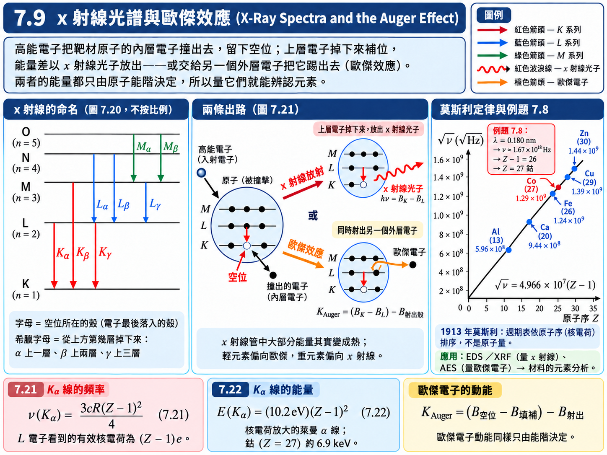
推導：\(K_\alpha\) 線的頻率與能量#
把【假設 1】的 \(Z - 1\) 代入【已知 1】，取 \(n_i = 2\)、\(n_f = 1\)：
\(\nu\left( K_\alpha \right)\) : \(K_\alpha\) x 射線的頻率 (Frequency of the \(K_\alpha\) line)，\([\text{Hz}]\)
\(Z\) : 靶材元素的原子序 (Atomic number of the target)，\([\text{無單位}]\)
乘上 \(h\) 換成光子能量，並用【定義 1】的註 \(hcR \approx 13.6 \ \text{eV}\)：
\(E\left( K_\alpha \right)\) : \(K_\alpha\) 光子的能量 (Energy of the \(K_\alpha\) photon)，\([\text{eV}]\)
\(10.2 \ \text{eV}\) 正是氫原子 \(2p \to 1s\) 的萊曼 \(\alpha\) 光子能量；\(K_\alpha\) 線就是「核電荷放大成 \(Z - 1\) 倍的萊曼 \(\alpha\)」。以鈷 (\(Z = 27\)) 為例，\(E\left( K_\alpha \right) \approx 10.2 \times 26^2 \ \text{eV} \approx 6.9 \ \text{keV}\)。
歷史上的意義： 1913 年莫斯利 (Henry Moseley) 量測了一系列元素的 \(K_\alpha\) 線，發現 \(\sqrt{\nu}\) 與原子序呈完美的直線關係，與 \((7.21)\) 一致。這確立了週期表的排序依據是原子序（核電荷數），而不是原子量：例如鈷的原子量比鎳大，化學性質卻要求鈷排在鎳前面，莫斯利的直線證實鈷是 \(27\)、鎳是 \(28\)。直線上空出來的位置，也預告了當時尚未發現的元素。
例題 7.8：由 \(K_\alpha\) 波長判斷元素#
題目： 哪一個元素的 \(K_\alpha\) x 射線波長為 \(0.180 \ \text{nm}\)？
解答：
先把波長換成頻率：
由 \((7.21)\) 解出 \(Z - 1\)：
原子序 \(27\) 的元素是鈷 (Co)。
【物理知識回顧】 這一題示範的是 \((7.21)\) 在今天最主要的用法：不是知道元素去算波長，而是量到波長去反推元素。在掃描式電子顯微鏡上加裝能量散佈 x 射線光譜儀 (EDS)，或用 x 射線螢光分析 (XRF)，打一束電子或 x 射線到樣品上的某一點，量出放出的特徵 x 射線能量，就知道那一點是什麼元素。半導體製程、光電、材料、化學的實驗室裡，這都是確認元素組成最基本的工具之一。
歐傑效應 (Auger Effect)#
產生 x 射線的那條路徑——撞出內層電子、上層電子掉下來補、多出的能量變成 x 射線——並不是唯一的路徑。電子躍遷可以產生電磁波，但不代表能量百分之百都會變成電磁波（第六章的非輻射躍遷也是同樣的道理）。事實上 x 射線管中絕大部分的能量都變成了熱，所以 x 射線管需要強力散熱。
還有一種可能（圖 7.21）：上層電子掉下來補空位時，多出來的能量不以光子放出，而是直接交給另一個外層電子，把它踢出原子。這個被踢出來的電子稱為歐傑電子 (Auger electron)，這個過程稱為歐傑效應（Auger 是法國物理學家的姓，依法文發音譯為「歐傑」）。
由能量守恆，歐傑電子的動能等於「填補空位釋放的能量」減掉「把它自己踢出去所需的束縛能」：
\(K_{\text{Auger}}\) : 歐傑電子的動能 (Kinetic energy of the Auger electron)，\([\text{eV}]\)
\(B_{\text{空位殼}}\)、\(B_{\text{填補殼}}\)、\(B_{\text{射出殼}}\) : 空位所在殼層、掉下來的電子原本所在殼層、被射出電子原本所在殼層的束縛能 (Binding energies of the vacancy, filling, and ejected-electron shells)，\([\text{eV}]\)
因此歐傑電子的動能與 x 射線光子能量不同，但兩者有一個共同點：都只由原子的能階決定。不同元素的能階不同，所以量歐傑電子的動能，同樣可以辨認元素——這就是歐傑電子能譜術 (Auger electron spectroscopy, AES)。兩種方法相輔相成：輕元素傾向放出歐傑電子，重元素傾向放出 x 射線，做材料分析時依元素選擇適合的工具。
附錄：原子光譜 (Atomic Spectra)#
本附錄課堂上不細講，以下只摘要重點；課本的能階圖（圖 7.22 – 圖 7.25）可自行對照。重點不在背這些能階圖，而在看出：每一種原子都有自己獨一無二的一組譜線。
氫（圖 7.22）： 單電子原子，躍遷遵守第六章的選擇規則 \(\Delta l = \pm 1\)，加上自旋後再加一條 \(\Delta j = 0, \pm 1\)。考慮精細結構後，\(n = 2\) 分成 \(2\,{}^2\mathrm{S}_{1/2}\)、\(2\,{}^2\mathrm{P}_{1/2}\)、\(2\,{}^2\mathrm{P}_{3/2}\)，\(n = 3\) 分成五個能階；\(\text{H}_\alpha\) 線在選擇規則下由七個躍遷組成，但同 \(n\)、同 \(j\) 的能階幾乎簡併，它們主要聚成兩群——這就是 \(7.1\) 節看到的雙線。
鈉（圖 7.23）： 一個 \(3s\) 價電子在填滿的 \([\text{Ne}]\) 核心外側，結構類似氫；但由 \(7.6\) 節的鑽入效應，同一個 \(n\) 的 \(\mathrm{S}\)、\(\mathrm{P}\)、\(\mathrm{D}\) 能階高度明顯不同，\(l\) 愈小能量愈低。著名的黃色 D 雙線（\(589.0 \ \text{nm}\) 與 \(589.6 \ \text{nm}\)）就是 \(3\,{}^2\mathrm{P}_{3/2}\)、\(3\,{}^2\mathrm{P}_{1/2} \to 3\,{}^2\mathrm{S}_{1/2}\) 的自旋—軌道分裂，能量差約 \(2.1 \times 10^{-3} \ \text{eV}\)，是氫原子 \(2p\) 分裂的約 \(50\) 倍——原子愈重，自旋—軌道耦合愈強。
氦（圖 7.24）： 兩個電子，依 LS 耦合，總自旋 \(\mathsf{S} = 0\)（單態，仲氦 parahelium）或 \(\mathsf{S} = 1\)（三重態，正氦 orthohelium）。由於選擇規則 \(\Delta\mathsf{S} = 0\)，兩套能階之間幾乎不躍遷，早年光譜學家甚至以為氦有兩種。三重態沒有 \(1\,{}^3\mathrm{S}\)——兩個電子都在 \(1s\) 又自旋平行，違反不相容原理；而同組態下三重態比單態低，是 \(7.6\) 節「自旋平行的電子彼此迴避」的又一例證。
汞（圖 7.25）： 兩個外層 \(6s\) 電子的重原子，自旋—軌道耦合強到讓 LS 耦合不再完全成立，於是 \(\Delta\mathsf{S} = 0\) 的限制被打破：\(6\,{}^3\mathrm{P}_1 \to 6\,{}^1\mathrm{S}_0\) 的「跨系統」譜線 \(253.7 \ \text{nm}\) 反而非常強——日光燈管裡激發螢光粉的紫外光，用的就是這一條。
適用範圍： 以下列出電偶極躍遷在 LS 耦合下的必要規則，還須改變總宇稱，且 \(\mathsf L=0\to0\) 亦禁止。這些條件不是所有高階輻射的通則。
LS 耦合下的選擇規則：
注意 \(\Delta\mathsf{L} = 0\) 在多電子原子中是允許的：真正躍遷的那個電子仍然遵守 \(\Delta l = \pm 1\)，但所有電子合起來的總 \(\mathsf{L}\) 可以不變。
【物理知識回顧】 原子的譜線就像人的指紋 (fingerprint)：不論是可見光、紫外光、紅外光、x 射線甚至歐傑電子，同一組譜線一定來自同一種元素。這也是光譜在原子物理、固態物理乃至電機系「光電」領域如此重要的原因——對實驗者而言，光是探測一個系統內部能階最容易的工具，我們沒辦法一個一個電子去量它的能量，但可以量它放出來的光。
一個著名的應用是宇宙學：從遙遠星系傳來的氫原子譜線，整組圖樣與實驗室裡的一樣，但每一條都往長波長偏移了一點——紅位移 (red shift)。由都卜勒效應，這代表光源正在遠離我們；而且不論往哪個方向看，遙遠的星系幾乎都在遠離，愈遠的退行得愈快。這是「宇宙正在膨脹」最主要的觀測證據，而它的基礎，就是原子光譜這張指紋。
本章總結
我們從第六章的三個量子數出發，補上自旋，再加上兩條原理，把多電子原子的結構整個建立了起來：
自旋（\(7.1\)）：精細結構與異常塞曼效應迫使我們承認電子有內稟角動量 \(S = \tfrac{\sqrt{3}}{2}\hbar\)、\(S_z = \pm\tfrac{1}{2}\hbar\)；史坦—格拉克實驗的「兩個落點」直接給出 \(s = \tfrac{1}{2}\)。自旋磁矩的旋磁比是軌道的兩倍，\(\mu_{sz} = \pm\mu_B\)。
不相容原理與交換對稱性（\(7.2\)、\(7.3\)）：採通常三維玻色／費米統計及電子的反對稱性，推出同一完整單粒子態不能被兩電子佔據；同自旋電子的空間關聯亦受交換作用影響。
週期表（\(7.4\)–\(7.6\)）：量子數計數給出子殼容量 \(2(2l+1)\) 與殼容量 \(2n^2\)；實際填充順序須結合屏蔽、軌域能量及電子間作用。宏德規則的能量解釋須同時用到交換對稱性與交互作用。
自旋—軌道耦合（\(7.7\)）：站在電子上看，原子核的繞行產生約 \(0.4 \ \text{T}\) 的內部磁場，使 \(l \ge 1\) 的能階分裂約 \(10^{-5} \ \text{eV}\)，這就是精細結構。
總角動量（\(7.8\)）：\(\vec{J} = \vec{L} + \vec{S}\)，\(j = l \pm \tfrac{1}{2}\)，大小與方向都量子化；多電子原子用 LS 耦合與項符號 \(n\,{}^{2\mathsf{S}+1}\mathsf{L}_{\mathsf{J}}\) 描述；自旋旋磁比的那個「\(2\)」透過 Landé \(g\) 因子解釋了異常塞曼效應。
x 射線光譜（\(7.9\)）：內殼空位被填補時放出 x 射線，\(E\left( K_\alpha \right) = \left( 10.2 \ \text{eV} \right)\left( Z-1 \right)^2\)，可反推元素；能量也可能交給另一個電子，形成歐傑效應。
本章把電子組態與週期趨勢連結到量子態計數、包立原理及能量比較。閱讀時應分清：哪些是由已列假設直接算出的結果，哪些依賴屏蔽、中心場、LS 耦合等近似，哪些仍需實驗或更完整的多電子計算。